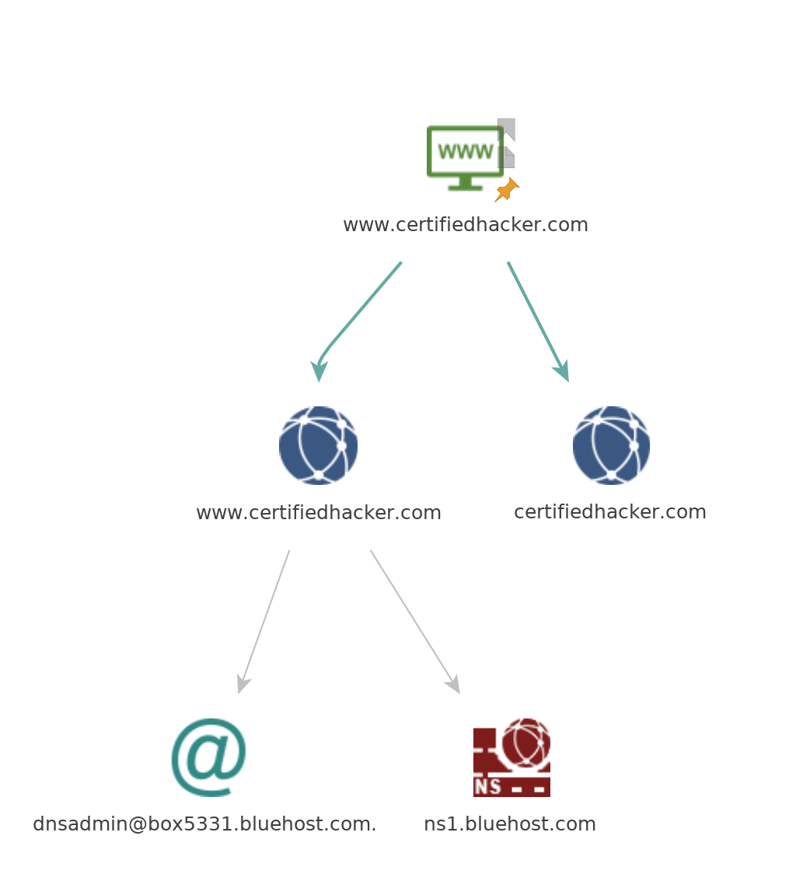
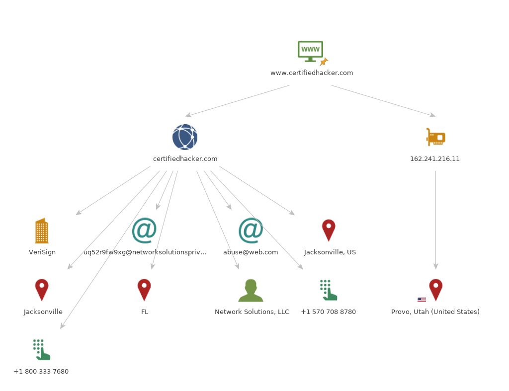
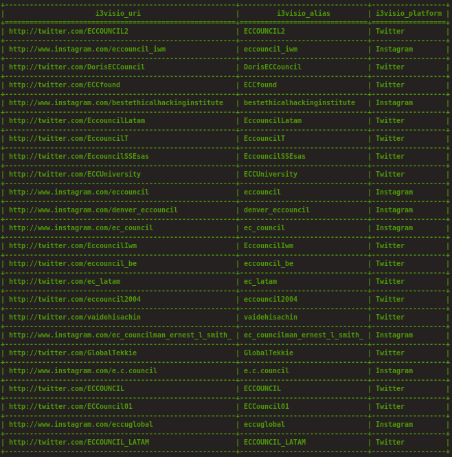

<?xml version="1.0" encoding="UTF-8"?><rss version="2.0"
	xmlns:content="http://purl.org/rss/1.0/modules/content/"
	xmlns:wfw="http://wellformedweb.org/CommentAPI/"
	xmlns:dc="http://purl.org/dc/elements/1.1/"
	xmlns:atom="http://www.w3.org/2005/Atom"
	xmlns:sy="http://purl.org/rss/1.0/modules/syndication/"
	xmlns:slash="http://purl.org/rss/1.0/modules/slash/"
	>

<channel>
	<title>SQL, Botnets and XSS Attacks Tools and Resources</title>
	<atom:link href="" rel="self" type="application/rss+xml" />
	<link>../../../index.html</link>
	<description></description>
	<lastBuildDate>Mon, 18 Nov 2024 10:51:34 +0000</lastBuildDate>
	<language>en-US</language>
	<sy:updatePeriod>
	hourly	</sy:updatePeriod>
	<sy:updateFrequency>
	1	</sy:updateFrequency>
	<generator>https://wordpress.org/?v=6.7</generator>

<image>
	<url>../../../wp-content/uploads/2022/02/cropped-cropped-text2image_P1487918_20220215_120124-32x32.png</url>
	<title>SQL, Botnets and XSS Attacks Tools and Resources</title>
	<link>../../../index.html</link>
	<width>32</width>
	<height>32</height>
</image> 
	<item>
		<title>Penetration Testing on MYSQL (Port 3306)</title>
		<link>../../../2024/11/18/penetration-testing-on-mysql-port-3306/index.html</link>
		
		<dc:creator><![CDATA[]]></dc:creator>
		<pubDate>Mon, 18 Nov 2024 10:50:23 +0000</pubDate>
				<category><![CDATA[Ethical Hacking With Kali Linux]]></category>
		<category><![CDATA[Ethical Hacking, Botnets, MAC Flooding, ARP Attacks, DDos, Sniffing & Penetration Testing.]]></category>
		<category><![CDATA[SQL, Botnets and XSS Attacks Tools and Resources]]></category>
		<guid isPermaLink="false">../../../index.html?p=8888</guid>

					<description><![CDATA[MySQL is an open-source Relational Database Management System (RDBMS). It is widely used for managing and organizing data in a structured format, using tables to store the data. MySQL functions....]]></description>
										<content:encoded><![CDATA[
<p>MySQL is an open-source Relational Database Management System (RDBMS). It is widely used for managing and organizing data in a structured format, using tables to store the data. MySQL functions in a networked setup utilizing a client-server architecture. In this configuration, the MySQL server manages the database, while client applications connect to the server to execute tasks like querying and updating data. The interaction between the MySQL clients and the server is conducted over the TCP/IP protocol, with MySQL by default listening on port 3306.</p>


<h3 class="wp-block-heading">Table of Contents</h3>


<ul class="wp-block-list">
<li>Lab setup</li>


<li>Installation</li>


<li>Connecting to MySQL server</li>


<li>Brute forcing MySQL credentials</li>


<li>Exploitation using Metasploit</li>


<li>Configuring a custom port</li>


<li>Conclusion</li>
</ul>


<h3 class="wp-block-heading">Lab setup</h3>


<p>Target Machine: Ubuntu (192.168.31.205)</p>


<p>Attacker Machine: Kali Linux (192.168.31.141)</p>


<h3 class="wp-block-heading">Installation</h3>


<p>We are going to start with the MySQL server setup in the ubuntu machine. The command for installing the server is:</p>


<p>apt install mysql-server</p>


<figure class="wp-block-image"></figure>


<p>To check if the server is up and running, use the following command:</p>


<p>netstat -tlnp</p>


<figure class="wp-block-image"></figure>


<p>It can be seen from above that the server is up and running at port 3306.</p>


<h3 class="wp-block-heading">Connecting to MySQL server</h3>


<p>We are going to scan the IP using the&nbsp;<strong>nmap</strong>&nbsp;tool in kali linux to check if the service is showing as closed or open. To do so we will run the following command in kali linux:</p>


<p>nmap -p3306 -sV 192.168.31.205</p>


<figure class="wp-block-image"></figure>


<p>It can be seen from above that the port&nbsp;<strong>3306</strong>&nbsp;at which the mysql service is running is&nbsp;<strong>closed</strong>. The reason for it is that the MySQL server is running internally on that machine and is using the&nbsp;<strong>bind-address</strong>&nbsp;set to&nbsp;<strong>127.0.0.1</strong>&nbsp;in the default settings.</p>


<p>In order to make the service open, we need to change the configuration. For that edit the&nbsp;<strong>mysqld.cnf</strong>&nbsp;file inside the ubuntu machine. To do so use the following command:</p>


<p>nano /etc/mysql/mysql.conf.d/mysqld.cnf</p>


<figure class="wp-block-image"></figure>


<p>To make the service open, comment out (#) the&nbsp;<strong>bind-address = 127.0.0.1</strong>&nbsp;line.</p>


<figure class="wp-block-image"></figure>


<p>Now again scan the IP using the&nbsp;<strong>nmap</strong>&nbsp;tool, it can be seen that the service is open now.</p>


<p>nmap -p3306 -sV 192.168.31.205</p>


<figure class="wp-block-image"></figure>


<p>However, it can be noted that even the service state is showing as&nbsp;<strong>open</strong>, we will be unable to connect with service remotely. To enable the&nbsp;<strong>root</strong>&nbsp;user to connect from any host and perform any action on any database, the following SQL commands are used in the ubuntu machine:</p>


<p>mysql -uroot</p>


<p>CREATE USER &#8216;root&#8217;@&#8217;%&#8217; IDENTIFIED BY &#8216;123&#8217;;</p>


<p>GRANT ALL PRIVILEGES ON *.* TO &#8216;root&#8217;@&#8217;%&#8217;;</p>


<p>FLUSH PRIVILEGES;</p>


<figure class="wp-block-image"></figure>


<p>The commands from the above can be interpreted as follows:</p>


<p>The first command is used to log into the MySQL server as the&nbsp;<strong>root</strong>&nbsp;user. The second command creates a new user named&nbsp;<strong>root</strong>&nbsp;who can connect from any host (%) and sets the password to&nbsp;<strong>123</strong>. The third command grants the newly created root user all privileges on all databases and tables. The last command reloads the privilege tables, ensuring that the changes take effect immediately.</p>


<p>Now we can check if we can login into the MySQL server remotely by running the following command in kali linux:</p>


<p>mysql -h 192.168.31.205 -uroot -p</p>


<figure class="wp-block-image"></figure>


<p>Since we are able to connect with the service remotely, now we will start the pentesting.</p>


<h3 class="wp-block-heading">Brute forcing MySQL credentials</h3>


<p>We can brute force the MySQL credentials by passing a list of usernames and passwords using the&nbsp;<strong>hydra</strong>&nbsp;tool inside kali linux. Here we are using the username list as&nbsp;<strong>users.txt</strong>&nbsp;and the password list as&nbsp;<strong>pass.txt</strong>. The command for brute force attack will be:</p>


<p>hydra -L users.txt -P pass.txt 192.168.31.205 mysql</p>


<figure class="wp-block-image"></figure>


<h3 class="wp-block-heading">Exploitation using Metasploit</h3>


<p>There are lot of exploits and auxiliaries related with the MySQL server. Here we are going to demonstrate few of them to give an insight on the MySQL pentesting.</p>


<p>First we will be using the&nbsp;<strong>auxiliary/admin/mysql/mysql_sql&nbsp;</strong>inside&nbsp;<strong>Metasploit&nbsp;</strong>to run the SQL queries directly after connecting with the database.</p>


<p>msfconsole -q</p>


<p>use auxiliary/admin/mysql/mysql_sql</p>


<p>set rhosts 192.168.31.205</p>


<p>set username root</p>


<p>set password 123</p>


<p>set sql show databases</p>


<p>run</p>


<figure class="wp-block-image"></figure>


<p>There is another auxiliary which helps in dumping the entire data, i.e.,&nbsp;<strong>auxiliary/scanner/mysql/mysql_schemadump.&nbsp;</strong>We just need to give the username and password to connect with the database and we can dump the entire schema.</p>


<p>use auxiliary/scanner/mysql/mysql_schemadump</p>


<p>set rhosts 192.168.31.205</p>


<p>set username root</p>


<p>set password 123</p>


<p>run</p>


<figure class="wp-block-image"></figure>


<p>To dump the usernames and password hashes, we can use the&nbsp;<strong>auxiliary/scanner/mysql/mysql_hashdump</strong>, it gives us the usernames and the password hashes as output.</p>


<p>use auxiliary/scanner/mysql/mysql_hashdump</p>


<p>set rhosts 192.168.31.205</p>


<p>set username root</p>


<p>set password 123</p>


<p>run</p>


<figure class="wp-block-image"></figure>


<p>In order to check if there is file which is writeable at the server side, we can identify it using the&nbsp;<strong>auxiliary/scanner/mysql/mysql_writable_dirs.&nbsp;</strong>However, it is not possible by default. There is a setting which we need to change in the configuration file after which we can enumerate the writable directory.</p>


<p>To make this configuration, edit the&nbsp;<strong>/etc/mysql/mysql.conf.d/mysqld.cnf&nbsp;</strong>file and add the line&nbsp;<strong>secure_file_priv=</strong>&nbsp;<strong>”&nbsp;</strong><strong>“</strong>&nbsp;at the end.</p>


<figure class="wp-block-image"></figure>


<p>Now check for the writable directories using Metasploit.</p>


<p>use auxiliary/scanner/mysql/mysql_writable_dirs</p>


<p>set rhosts 192.168.31.205</p>


<p>set username root</p>


<p>set password 123</p>


<p>set dir_list dir.txt</p>


<p>run</p>


<figure class="wp-block-image"></figure>


<p>It can be seen from above that the directory&nbsp;<strong>/tmp</strong>&nbsp;is writeable.</p>


<p>To enumerate the files and directories if they exist on the machine or not we can use the&nbsp;<strong>auxiliary/scanner/mysql/mysql_file_enum</strong>. It will give us the results if the directory or file exists or not.</p>


<figure class="wp-block-image"></figure>


<p>Finally, to enumerate the whole MySQL server we can use the&nbsp;<strong>auxiliary/admin/mysql/mysql_enum</strong>, which will perform the enumeration on the MySQL server after using the valid credentials.</p>


<p>use auxiliary/admin/mysql/mysql_enum</p>


<p>set rhosts 192.168.31.205</p>


<p>set username root</p>


<p>set password 123</p>


<p>run</p>


<figure class="wp-block-image"></figure>


<h3 class="wp-block-heading">Configuring a custom port</h3>


<p>To perform the port modification in MySQL, we need to edit the configuration file. The path for the file is&nbsp;<strong>/etc/mysql/mysql.conf.d/mysqld.cnf</strong>.</p>


<p>nano etc/mysql/mysql.conf.d/mysqld.cnf</p>


<figure class="wp-block-image"></figure>


<p>As we can see that the default port is&nbsp;<strong>3306</strong>&nbsp;which is getting used and is commented out (#). We can modify the port number to&nbsp;<strong>4403</strong>&nbsp;and remove the comment (#) from the line.</p>


<figure class="wp-block-image"></figure>


<p>Now if we scan the IP using&nbsp;<strong>nmap</strong>, it can be seen that the service is up and running at port&nbsp;<strong>4403</strong>.</p>


<figure class="wp-block-image"></figure>


<h3 class="wp-block-heading">Conclusion</h3>


<p>MySQL server has been a popular choice for most of the application developers from many years, however it’s misconfiguration can lead to the data leakage. It is recommended to use the proper configuration and implement a strong password policy for the service.</p>
]]></content:encoded>
					
		
		
			</item>
		<item>
		<title>Vulnerability Scanning</title>
		<link>../../../2024/11/18/vulnerability-scanning/index.html</link>
		
		<dc:creator><![CDATA[]]></dc:creator>
		<pubDate>Mon, 18 Nov 2024 10:27:36 +0000</pubDate>
				<category><![CDATA[Ethical Hacking With Kali Linux]]></category>
		<category><![CDATA[SQL, Botnets and XSS Attacks Tools and Resources]]></category>
		<guid isPermaLink="false">../../../index.html?p=8866</guid>

					<description><![CDATA[Vulnerability Scanning refers to auditing hosts, ports, and services running in a network to assess the security posture and search for security loopholes. It determines the possibility of network security....]]></description>
										<content:encoded><![CDATA[
<p></p>


<p>Vulnerability Scanning refers to auditing hosts, ports, and services running in a network to assess the security posture and search for security loopholes.</p>


<p>It determines the possibility of network security attacks, evaluating the organization’s systems and network for vulnerabilities such as missings patches, unnecessary services, weak authentication, and weak encryption. Vulnerability scanning is a critical component of any penetration testing assignment.</p>


<h2 class="wp-block-heading" id="nessus">Nessus<a href="https://julisunkan.github.io/Network-Servers-Penetration-Guides-and-Tools/4-Vulnerability-Analysis/Overview-and-Tools.html#nessus"></a></h2>


<figure class="wp-block-image"></figure>


<p>Nessus allows to remotely audit a network and determine if it has been broken into or misued in some way. It also provides the ability to locally audit a specific machine for vulnerabilities.</p>


<p>Official website: https://www.tenable.com/downloads/nessus</p>


<h2 class="wp-block-heading" id="gfi-languard">GFI LanGuard<a href="https://julisunkan.github.io/Network-Servers-Penetration-Guides-and-Tools/4-Vulnerability-Analysis/Overview-and-Tools.html#gfi-languard"></a></h2>


<figure class="wp-block-image"></figure>


<p>GFI LanGuard is a software similar to Nessus, it scans networks and ports to detect, assess, and correct any security vulnerabilities found.</p>


<p>Official website: https://www.gfi.com/products-and-solutions/network-security-solutions/gfi-languard</p>


<h2 class="wp-block-heading" id="nikto">Nikto<a href="https://julisunkan.github.io/Network-Servers-Penetration-Guides-and-Tools/4-Vulnerability-Analysis/Overview-and-Tools.html#nikto"></a></h2>


<figure class="wp-block-image"></figure>


<p>Nikto Web Scanner is a Web server scanner that tests Web servers for dangerous file/CGIs, outdated server software and other problems.</p>


<p>Nikto is an Open Source (GPL) web server which performs comprehensive tests against web servers for multiple items, including over 6400 potentially dangerous files/CGIs, checks for outdated versions of over 1200 servers, and version specific problems on over 270 servers. It also scans server configuration items such as the presence of multiple index files, HTTP server options, and attempts to identify installed web servers and software. Scan items and plugins are frequently updated and can be automatically updated. Nikto is not a stealth tool, it scans a webserver in the shortest time but gets logged in an IDS.</p>


<p>Official repository: https://github.com/sullo/nikto</p>


<p></p>
]]></content:encoded>
					
		
		
			</item>
		<item>
		<title>What is Footprinting and Reconnaissance?</title>
		<link>../../../2024/11/18/what-is-footprinting-and-reconnaissance/index.html</link>
		
		<dc:creator><![CDATA[]]></dc:creator>
		<pubDate>Mon, 18 Nov 2024 09:08:21 +0000</pubDate>
				<category><![CDATA[Ethical Hacking With Kali Linux]]></category>
		<category><![CDATA[Ethical Hacking, Botnets, MAC Flooding, ARP Attacks, DDos, Sniffing & Penetration Testing.]]></category>
		<category><![CDATA[SQL, Botnets and XSS Attacks Tools and Resources]]></category>
		<guid isPermaLink="false">../../../index.html?p=8838</guid>

					<description><![CDATA[Footprinting (also known as reconnaissance) is the technique used for gathering information about computer systems and the entities they belong to. To get this information, a hacker might use various....]]></description>
										<content:encoded><![CDATA[
<p>Footprinting (also known as reconnaissance) is the technique used for gathering information about computer systems and the entities they belong to. To get this information, a hacker might use various tools and technologies. This information is very useful to a hacker who is trying to crack a whole system.</p>


<p>When used in the computer security lexicon, “Footprinting” generally refers to one of the pre-attack phases; tasks performed before doing the actual attack. Some of the tools used for Footprinting are Sam Spade, nslookup, traceroute, Nmap and neotrace.</p>


<p>Footprinting helps to:</p>


<p><strong>Know Security Posture</strong>&nbsp;– The data gathered will help us to get an overview of the security posture of the company such as details about the presence of a firewall, security configurations of applications etc.</p>


<p><strong>Reduce Attack Area</strong>&nbsp;– Can identify a specific range of systems and concentrate on particular targets only. This will greatly reduce the number of systems we are focussing on.</p>


<p><strong>Identify vulnerabilities</strong>&nbsp;– we can build an information database containing the vulnerabilities, threats, loopholes available in the system of the target organization.</p>


<p><strong>Draw Network map</strong>&nbsp;– helps to draw a network map of the networks in the target organization covering topology, trusted routers, presence of server and other information.</p>


<p># Footprinting basics with Windows command line</p>


<p>The objective of this tutorial is teach the basics of Footprinting methodologies, used for ethical-hackers and pentesters.</p>


<h3 class="wp-block-heading" id="requirements">Requirements<a href="https://julisunkan.github.io/Network-Servers-Penetration-Guides-and-Tools/1-Footprinting-and-Reconnaissance/1-Windows-CommandLine.html#requirements"></a></h3>


<ul class="wp-block-list">
<li>Virtual environment</li>


<li>Windows 8.1/10</li>


<li>Windows Server 2012 or 2016</li>


<li>Basics of networking</li>
</ul>


<h3 class="wp-block-heading" id="objectives">Objectives<a href="https://julisunkan.github.io/Network-Servers-Penetration-Guides-and-Tools/1-Footprinting-and-Reconnaissance/1-Windows-CommandLine.html#objectives"></a></h3>


<ul class="wp-block-list">
<li>Use ping command to find the IP address of target domain.</li>


<li>Use ping command to emulate the traceroute (tracert command).</li>


<li>Discover the maximum frame size for the network.</li>


<li>ICMP type and the code for echo request and echo reply packets.</li>
</ul>


<h2 class="wp-block-heading" id="commands-used-on-this-tutorial">Commands used on this tutorial<a href="https://julisunkan.github.io/Network-Servers-Penetration-Guides-and-Tools/1-Footprinting-and-Reconnaissance/1-Windows-CommandLine.html#commands-used-on-this-tutorial"></a></h2>


<h2 class="wp-block-heading" id="ping"><code>ping</code><a href="https://julisunkan.github.io/Network-Servers-Penetration-Guides-and-Tools/1-Footprinting-and-Reconnaissance/1-Windows-CommandLine.html#ping"></a></h2>


<p>The ping command sends ICMP (Internet Control Message Protocol) Used to test the reachability of a host on a IP network and measures the travel time for messages sent from the originating host to destinantion target.</p>


<h2 class="wp-block-heading" id="nslookup"><code>nslookup</code><a href="https://julisunkan.github.io/Network-Servers-Penetration-Guides-and-Tools/1-Footprinting-and-Reconnaissance/1-Windows-CommandLine.html#nslookup"></a></h2>


<p>Used for querying the DNS (Domain Name System), to obtain a domain name or IP address mapping and other specific DNS record.</p>


<h2 class="wp-block-heading" id="tracert-windows-or-traceroute-linux"><code>tracert</code>&nbsp;(Windows) or&nbsp;<code>traceroute</code>&nbsp;(Linux)<a href="https://julisunkan.github.io/Network-Servers-Penetration-Guides-and-Tools/1-Footprinting-and-Reconnaissance/1-Windows-CommandLine.html#tracert-windows-or-traceroute-linux"></a></h2>


<p>Diagnostic tool for displaying the route and measuring transit delays of packets across an IP network</p>


<p><strong>NOTE:</strong><br><strong>I strongly recommend you to use the -help command to specify all parameters of a given command</strong></p>


<p><code>ping -help</code></p>


<hr class="wp-block-separator has-alpha-channel-opacity"/>


<h2 class="wp-block-heading" id="finding-the-ip-address-of-httpwwwcertifiedhackercom">Finding the IP address of http://www.certifiedhacker.com<a href="https://julisunkan.github.io/Network-Servers-Penetration-Guides-and-Tools/1-Footprinting-and-Reconnaissance/1-Windows-CommandLine.html#finding-the-ip-address-of-httpwwwcertifiedhackercom"></a></h2>


<p>Open the&nbsp;<strong>Command prompt</strong>&nbsp;or&nbsp;<strong>PowerShell</strong>&nbsp;on Windows and type:</p>


<p><code>ping www.certifiedhacker.com</code></p>


<p>The response should be similiar to the message below.<br>Note: The IP address may differ in your environment.</p>


<pre class="wp-block-code"><code>Reply from 162.241.216.11: bytes=32 time=160ms TTL=40
Reply from 162.241.216.11: bytes=32 time=151ms TTL=40
Reply from 162.241.216.11: bytes=32 time=151ms TTL=40
Reply from 162.241.216.11: bytes=32 time=153ms TTL=40

Ping statistics for 162.241.216.11:
    Packets: Sent = 4, Received = 4, Lost = 0 (0% loss)
Approximate round trip times in milli-seconds:
    Minimum = 151ms, Maximum = 160ms, Average = 153ms
</code></pre>


<hr class="wp-block-separator has-alpha-channel-opacity"/>


<h2 class="wp-block-heading" id="finding-the-maximum-frame-size-on-the-network">Finding the maximum frame size on the network<a href="https://julisunkan.github.io/Network-Servers-Penetration-Guides-and-Tools/1-Footprinting-and-Reconnaissance/1-Windows-CommandLine.html#finding-the-maximum-frame-size-on-the-network"></a></h2>


<p>Use the last command and add the&nbsp;<code>-f</code>&nbsp;parameter to not fragment on the ping packet and&nbsp;<code>-l</code>&nbsp;to set the frame size to&nbsp;<code>1500</code>&nbsp;bytes.</p>


<p><code>ping www.certifiedhacker.com -f -l 1500</code></p>


<p>Output:</p>


<pre class="wp-block-code"><code>Packet needs to be fragmented but DF set.
</code></pre>


<p>This message above means that the frame is too large to be on the network and needs to be fragmented.</p>


<p>The propose here is to try different values until you reach the maximum frame size.</p>


<p><strong>Example:</strong></p>


<p>` ping www.certifiedhacker.com -f -l 1450<code>&lt;br&gt; _working_&lt;br&gt;&nbsp;</code>ping www.certifiedhacker.com -f -l 1475<code>&lt;br&gt; _reached the limit_&lt;br&gt;&nbsp;</code>ping www.certifiedhacker.com -f -l 1473<code>&lt;br&gt; _reached the limit_&lt;br&gt;&nbsp;</code>ping www.certifiedhacker.com -f -l 1472`<br><em>working</em></p>


<p>In conclusion, note the last two replies&nbsp;<code>1473</code>&nbsp;bytes and&nbsp;<code>1472</code>&nbsp;bytes shows the&nbsp;<strong>maximum frame size</strong>&nbsp;on this machine’s network. ***</p>


<h2 class="wp-block-heading" id="investigate-the-ttl-time-to-live">Investigate the TTL (Time to Live).<a href="https://julisunkan.github.io/Network-Servers-Penetration-Guides-and-Tools/1-Footprinting-and-Reconnaissance/1-Windows-CommandLine.html#investigate-the-ttl-time-to-live"></a></h2>


<p>Every frame on the network has their own TTL defined.<br>If the TTL reaches 0, the router discards the packet to prevent packet loss.</p>


<p><code>ping www.certifiedhacker.com -i 3</code></p>


<pre class="wp-block-code"><code>Reply from 10.10.127.254: TTL expired in transit.
Reply from 10.10.127.254: TTL expired in transit.
Reply from 10.10.127.254: TTL expired in transit.
Reply from 10.10.127.254: TTL expired in transit.
</code></pre>


<p>The&nbsp;<code>-i</code>&nbsp;parameter means wait time, that is the number of seconds to wait between each ping (values between&nbsp;<code>1-255</code>).</p>


<p>TTL expired means that the router discarded the frame, beacuse the TTL has expired (reached 0). ***</p>


<h2 class="wp-block-heading" id="find-the-traceroute-from-your-machine-to-wwwcertifiedhackercom">Find the traceroute from your machine to www.certifiedhacker.com<a href="https://julisunkan.github.io/Network-Servers-Penetration-Guides-and-Tools/1-Footprinting-and-Reconnaissance/1-Windows-CommandLine.html#find-the-traceroute-from-your-machine-to-wwwcertifiedhackercom"></a></h2>


<p>This command traceroutes the network configuration information of the target domain.</p>


<p>Open a new window on your prompt or powershell and type:</p>


<p><code>tracert www.certifiedhacker.com</code></p>


<p>The system resolves the URL into its IP address and starts to trace the path to the destination. Here it takes 19 hops for the packet to reach the specified destination.</p>


<p>You can use the help flag to show different options for the command:&nbsp;<code>tracert /?</code>&nbsp;***</p>


<h2 class="wp-block-heading" id="lets-check-the-life-span-of-the-packet">Let’s check the life span of the packet.<br><a href="https://julisunkan.github.io/Network-Servers-Penetration-Guides-and-Tools/1-Footprinting-and-Reconnaissance/1-Windows-CommandLine.html#lets-check-the-life-span-of-the-packet"></a></h2>


<p>Open a new window of your prompt or powershell and type:</p>


<p><code>ping www.certifiedhacker.com -i 2 -n 1</code></p>


<p>We are setting the TTL to&nbsp;<code>2</code>&nbsp;in an attempt to check the life span of the packet and&nbsp;<code>-n</code>&nbsp;count of packet to&nbsp;<code>1</code></p>


<pre class="wp-block-code"><code>Pinging certifiedhacker.com &#91;162.241.216.11] with 32 bytes of data:
Reply from 10.10.10.45: TTL expired in transit.

Ping statistics for 162.241.216.11:
    Packets: Sent = 1, Received = 1, Lost = 0 (0% loss),
</code></pre>


<p>There is a reply coming from IP address 162.241.216.11 with no packet loss.</p>


<p>Let’s set the TTL value to&nbsp;<code>3</code>&nbsp;to see what happens</p>


<p><code>ping www.certifiedhacker.com -i 3 -n 1</code></p>


<pre class="wp-block-code"><code>Pinging certifiedhacker.com &#91;162.241.216.11] with 32 bytes of data:
Reply from 10.10.127.254: TTL expired in transit.

Ping statistics for 162.241.216.11:
    Packets: Sent = 1, Received = 1, Lost = 0 (0% loss),
</code></pre>


<p>Note there is a different IP address, the same one that we gather on the traceroute command on the first hops.</p>


<p>Repeat this and increase the TTL value until reach the IP address from www.certifiedhacker.com that we trace routed before.</p>


<p><code>ping www.certifiedhacker.com -i 19 -n 1</code></p>


<pre class="wp-block-code"><code>Pinging certifiedhacker.com &#91;162.241.216.11] with 32 bytes of data:
Reply from 162.241.216.11: bytes=32 time=156ms TTL=40

Ping statistics for 162.241.216.11:
    Packets: Sent = 1, Received = 1, Lost = 0 (0% loss),
Approximate round trip times in milli-seconds:
    Minimum = 156ms, Maximum = 156ms, Average = 156ms
</code></pre>


<p>Done! These results implies when you set the TTL to 19(in this case) the reply is received from destination host (162.241.216.11). Keep in mind that the output will be similar to the trace route results.</p>


<p>Make a note of all the IP addresses from which you receive a reply.</p>


<hr class="wp-block-separator has-alpha-channel-opacity"/>


<h2 class="wp-block-heading" id="using-nslookup-command">Using&nbsp;<code>nslookup</code>&nbsp;command<a href="https://julisunkan.github.io/Network-Servers-Penetration-Guides-and-Tools/1-Footprinting-and-Reconnaissance/1-Windows-CommandLine.html#using-nslookup-command"></a></h2>


<p>Used for querying the DNS (Domain Name System), to obtain a domain name or IP address mapping and other specific DNS record.</p>


<p>Type in your prompt or powershell:</p>


<p><code>nslookup</code></p>


<p><strong>Note</strong>: This command will launch a interactive mode, you can type&nbsp;<code>help</code>&nbsp;to list available commands!</p>


<p>For query IP address of a given domain, you need to set the&nbsp;<code>type</code>&nbsp;to&nbsp;<code>A</code>&nbsp;record, then enter the target domain:</p>


<p><code>&gt; type=a</code><br><code>&gt; www.certifiedhacker.com</code></p>


<pre class="wp-block-code"><code>&gt; set type=a
&gt; www.certifiedhacker.com

Server:  dns.google
Address:  8.8.8.8

Non-authoritative answer:
Name:    certifiedhacker.com
Address:  162.241.216.11
Aliases:  www.certifiedhacker.com
</code></pre>


<p><strong>Note</strong>: This environment uses Google DNS server (8.8.8.8). To configure your own DNS server just type&nbsp;<code>server x.x.x.x</code>.</p>


<p>The first two lines&nbsp;<strong>dns.google</strong>&nbsp;and&nbsp;<strong>8.8.8.8</strong>&nbsp;specifies that the result was directed to this server to resolve your requested domain. Google’s DNS server do not contain domain’s original zone files, this is why is&nbsp;<strong>Non-authoritative</strong>.</p>


<p>The&nbsp;<strong>Authoritative</strong>&nbsp;is a name server that has the original source files of a domain zone files. To obtain the Authoritative name server, set the&nbsp;<code>type</code>&nbsp;to&nbsp;<code>CNAME</code>&nbsp;record and query the target:</p>


<p><code>set type=cname</code><br><code>certifiedhacker.com</code></p>


<pre class="wp-block-code"><code>&gt; set type=cname
&gt; certifiedhacker.com
Server:  dns.google
Address:  8.8.8.8

certifiedhacker.com
        primary name server = ns1.bluehost.com
        responsible mail addr = dnsadmin.box5331.bluehost.com
        serial  = 2018011205
        refresh = 86400 (1 day)
        retry   = 7200 (2 hours)
        expire  = 3600000 (41 days 16 hours)
        default TTL = 300 (5 mins)
</code></pre>


<p>The&nbsp;<code>CNAME</code>&nbsp;lookup is done directly against the domain’s authoritative name server.</p>


<p>With the authoritative name server, you can determine the IP address. To query IP address set the&nbsp;<code>type</code>&nbsp;to&nbsp;<code>A</code>, then type the&nbsp;<strong>primary name server</strong>&nbsp;displayed in your lab environment, in my case:&nbsp;<code>ns1.bluehost.com</code>.</p>


<p><code>set type=a</code><br><code>ns1.bluehost.com</code></p>


<pre class="wp-block-code"><code>&gt; set type=a
&gt; ns1.bluehost.com
Server:  dns.google
Address:  8.8.8.8

Non-authoritative answer:
Name:    ns1.bluehost.com
Address:  162.159.24.80
</code></pre>


<p>In conclusion, the&nbsp;<strong>Authoritative name server</strong>&nbsp;stores the records associated with the respective domain. Having the authoritative name server (primary name server) and the IP address associated with it, an attacker can attempt to exploit the server, performing attacks like DDoS, URL redirection and so on.</p>


<p><strong>Final analysis:</strong></p>


<ul class="wp-block-list">
<li>Document all the IP addresses</li>


<li>Reply request IP addresses</li>


<li>Information about TTL’s</li>


<li>DNS server names and other DNS information.</li>
</ul>


<h1 class="wp-block-heading" id="footprinting-using-maltego">Footprinting using Maltego</h1>


<p>Maltego is an open source in$$telligence and forensics application. It gathers information about a target and represents in an easily-understandable format.</p>


<h3 class="wp-block-heading" id="requirements">Requirements:<a href="https://julisunkan.github.io/Network-Servers-Penetration-Guides-and-Tools/1-Footprinting-and-Reconnaissance/2-Maltego-Basics.html#requirements"></a></h3>


<ul class="wp-block-list">
<li>Kali Linux virtual machine</li>
</ul>


<h3 class="wp-block-heading" id="objectives">Objectives:<a href="https://julisunkan.github.io/Network-Servers-Penetration-Guides-and-Tools/1-Footprinting-and-Reconnaissance/2-Maltego-Basics.html#objectives"></a></h3>


<ul class="wp-block-list">
<li>Identify IP address</li>


<li>Identify Domain and Domain Name Schema</li>


<li>Identify Server Side Technology</li>


<li>Identify Service Oriented Architecture (SOA) information</li>


<li>Identify Name Server</li>


<li>Identify Mail Exchanger</li>


<li>Identify Geographical Location</li>


<li>Identify Entities</li>


<li>Discover Email addresses and Phone numbers</li>
</ul>


<p>Currently there are three versions of the Maltego client namely Maltego CE, Maltego Classic and Maltego XL.&nbsp;<strong>This tutorial will focus on Maltego Community Edition (CE).</strong></p>


<p>Kali Linux comes with Maltego installed. Launch your Maltego from the applications bar. In case it is your first time using Maltego, just select the Maltego CE (Free) edition and create a free account on https://www.paterva.com/community/community.php</p>


<h2 class="wp-block-heading" id="maltego-basics">Maltego Basics<a href="https://julisunkan.github.io/Network-Servers-Penetration-Guides-and-Tools/1-Footprinting-and-Reconnaissance/2-Maltego-Basics.html#maltego-basics"></a></h2>


<ol class="wp-block-list">
<li>Click on (+) icon located at the top-left corner of the GUI (in the toolbar) to create a new graph window (like a blank document).</li>


<li>Go to left panel and expand the <strong>Infrastructure</strong> node under Entity Palette. This list have a bunch of useful entities such as AS, DNS Name, Domain, MX Record, etc.</li>
</ol>


<figure class="wp-block-image"></figure>


<ol class="wp-block-list">
<li>Drag the Website entity to your New Graph(1) section.</li>


<li>Rename the domain name to www.certifiedhacker.com</li>
</ol>


<h2 class="wp-block-heading" id="identifying-the-server-side-technology">Identifying the server side technology<a href="https://julisunkan.github.io/Network-Servers-Penetration-Guides-and-Tools/1-Footprinting-and-Reconnaissance/2-Maltego-Basics.html#identifying-the-server-side-technology"></a></h2>


<ol class="wp-block-list">
<li>Right-click the entity and select <strong>All Transforms</strong> and click <strong>To Server Technologies [BuiltWith]</strong></li>
</ol>


<figure class="wp-block-image"></figure>


<p>Note: Maltego can be useful to show results in more dynamic way processing by visual demonstrating interconnected links between searched items.</p>


<h2 class="wp-block-heading" id="identifying-the-domain">Identifying the Domain<a href="https://julisunkan.github.io/Network-Servers-Penetration-Guides-and-Tools/1-Footprinting-and-Reconnaissance/2-Maltego-Basics.html#identifying-the-domain"></a></h2>


<ol class="wp-block-list">
<li>Create a new graph or delete/save the previous results.</li>


<li>Right-click the Domain entity and select <strong>All Transforms -> To Domains [DNS]</strong>.</li>
</ol>


<figure class="wp-block-image"></figure>


<p>This transform will attempt to test name schemas against a domain and try to identify a specific name schema for the domain.</p>


<h2 class="wp-block-heading" id="identifying-the-soa-information">Identifying the SOA information<a href="https://julisunkan.github.io/Network-Servers-Penetration-Guides-and-Tools/1-Footprinting-and-Reconnaissance/2-Maltego-Basics.html#identifying-the-soa-information"></a></h2>


<ol class="wp-block-list">
<li>Create a new graph or delete/save the previous results.</li>


<li>Right-click the Domain entity and select <strong>All Transforms -> To DNS Name &#8211; SOA (Start of Authority)</strong>.</li>
</ol>


<figure class="wp-block-image"></figure>


<h2 class="wp-block-heading" id="identifying-the-mail-exchanger">Identifying the Mail Exchanger<a href="https://julisunkan.github.io/Network-Servers-Penetration-Guides-and-Tools/1-Footprinting-and-Reconnaissance/2-Maltego-Basics.html#identifying-the-mail-exchanger"></a></h2>


<ol class="wp-block-list">
<li>Create a new graph or delete/save the previous results.</li>


<li>Right-click the Domain entity and select <strong>All Transforms -> To DNS Name &#8211; MX (mail server)</strong>.</li>
</ol>


<figure class="wp-block-image"></figure>


<h2 class="wp-block-heading" id="identifying-the-name-server">Identifying the Name Server<a href="https://julisunkan.github.io/Network-Servers-Penetration-Guides-and-Tools/1-Footprinting-and-Reconnaissance/2-Maltego-Basics.html#identifying-the-name-server"></a></h2>


<ol class="wp-block-list">
<li>Create a new graph or delete/save the previous results.</li>


<li>Right-click the Domain entity and select <strong>All Transforms -> To DNS Name &#8211; NS (name server)</strong>.</li>
</ol>


<figure class="wp-block-image"></figure>


<h2 class="wp-block-heading" id="identifying-the-ip-address-location-and-whois">Identifying the IP Address, Location and Whois<a href="https://julisunkan.github.io/Network-Servers-Penetration-Guides-and-Tools/1-Footprinting-and-Reconnaissance/2-Maltego-Basics.html#identifying-the-ip-address-location-and-whois"></a></h2>


<ol class="wp-block-list">
<li>Create a new graph or delete/save the previous results.</li>


<li>Right-click the Website entity and select <strong>All Transforms -> To IP address [DNS]</strong>.</li>


<li>Right-click the IP entity and select <strong>All Transforms -> To Location [city, country]</strong>.</li>


<li>Right-click the Website entity and select <strong>All Transforms -> To entities from whois [IBM Watson]</strong>.</li>
</ol>


<figure class="wp-block-image"></figure>


<h2 class="wp-block-heading" id="in-conclusion">In conclusion:<a href="https://julisunkan.github.io/Network-Servers-Penetration-Guides-and-Tools/1-Footprinting-and-Reconnaissance/2-Maltego-Basics.html#in-conclusion"></a></h2>


<p>Maltego is a powerful tool, you can extract a broad type of information through the network, technologies and personnel(email, phone number, twitter).</p>


<p>By extracting all this information, an attacker can perform different type of malicious activity.</p>


<ul class="wp-block-list">
<li>The built-in technologies of the server: attackers might search for vulnerabilities related to any of them and simulate exploitation techniques.</li>


<li>SOA information: also can be useful for attackers, they can abuse this information to find vulnerabilities in their services and architectures and exploit them.</li>


<li>Name Server: attackers can exploit NS using malicious techniques like DNS hijacking and URL redirection.</li>


<li>IP addresses: attackers can abuse the IP address by scanning and searching for open ports and vulnerabilities, and thereby attempt to intrude in the network and exploit them.</li>


<li>Geographical location: attackers can perform social engineering attacks to leverage sensitive information.</li>
</ul>


<h1 class="wp-block-heading" id="recon-ng-tutorial">Recon-ng Tutorial</h1>


<p>Recon-ng is a web-based open-source reconnaissance tool used to extract information from a target organization and its personnel.<br><em>Official repository:</em>&nbsp;https://github.com/lanmaster53/recon-ng</p>


<ul class="wp-block-list">
<li>Version: v5.0.1</li>
</ul>


<h3 class="wp-block-heading" id="requirements">Requirements:<a href="https://julisunkan.github.io/Network-Servers-Penetration-Guides-and-Tools/1-Footprinting-and-Reconnaissance/3-Recon-ng.html#requirements"></a></h3>


<ul class="wp-block-list">
<li>Kali Linux virtual machine</li>
</ul>


<h3 class="wp-block-heading" id="objectives">Objectives:<a href="https://julisunkan.github.io/Network-Servers-Penetration-Guides-and-Tools/1-Footprinting-and-Reconnaissance/3-Recon-ng.html#objectives"></a></h3>


<ul class="wp-block-list">
<li>How to perform network recon.</li>


<li>Gather hosts related to a domain.</li>


<li>Personal Information Gathering.</li>


<li>Generate a report with harvested information.</li>
</ul>


<p>Recon-ng has a look and feel similar to the Metasploit Framework, reducing the learning curve for leveraging the framework.</p>


<h2 class="wp-block-heading" id="first-steps">First steps<a href="https://julisunkan.github.io/Network-Servers-Penetration-Guides-and-Tools/1-Footprinting-and-Reconnaissance/3-Recon-ng.html#first-steps"></a></h2>


<ol class="wp-block-list">
<li>Open the terminal and type <code>recon-ng</code></li>


<li>Type <code>help</code> to view all commands that allow you to add/delete records to DB, query, etc.<code>back Exits the current context dashboard Displays a summary of activity db Interfaces with the workspace's database exit Exits the framework help Displays this menu index Creates a module index (dev only) keys Manages third party resource credentials marketplace Interfaces with the module marketplace modules Interfaces with installed modules options Manages the current context options pdb Starts a Python Debugger session (dev only) script Records and executes command scripts shell Executes shell commands show Shows various framework items snapshots Manages workspace snapshots spool Spools output to a file workspaces Manages workspaces </code><strong>Note:<br>On your first load of recon-ng note the message below. You begin with an empty framework (without modules pre-installed).</strong><code>[*] No modules enabled/installed.</code></li>


<li>Create a new workspace:<br><code>workspaces create CEH</code></li>


<li>Add the target domain to perform a network recon:<br><code>db insert domains</code><br><code>certifiedhacker.com</code></li>
</ol>


<p>You can view the added domain by typing&nbsp;<code>show domains</code></p>


<pre class="wp-block-code"><code>&#91;recon-ng]&#91;CEH] &gt; db insert domains
domain (TEXT): certifiedhacker.com
&#91;*] 1 rows affected.
&#91;recon-ng]&#91;CEH] &gt; show domains

  +--------------------------------------------+
  | rowid |        domain       |    module    |
  +--------------------------------------------+
  | 1     | certifiedhacker.com | user_defined |
  +--------------------------------------------+
</code></pre>


<h2 class="wp-block-heading" id="using-modules-from-recon-ng-marketplace">Using Modules from Recon-ng Marketplace<a href="https://julisunkan.github.io/Network-Servers-Penetration-Guides-and-Tools/1-Footprinting-and-Reconnaissance/3-Recon-ng.html#using-modules-from-recon-ng-marketplace"></a></h2>


<p>Recon-ng works with independent modules, database interaction, built in convenience functions, interactive help, and command completion, Recon-ng provides a powerful environment in which open source web-based reconnaissance can be conducted quickly and thoroughly. To add new modules you will use&nbsp;<strong>marketplace</strong>.</p>


<p>Recon-ng Marketplace repository:<br>https://github.com/lanmaster53/recon-ng-marketplace</p>


<p>To view the entire marketplace repo type:&nbsp;<code>marketplace search</code></p>


<p>Dealing with modules and workspaces process is very easy as shown on the example below:</p>


<pre class="wp-block-code"><code>0. Installing module using marketplace command:
&gt; marketplace install recon/domains-hosts/findsubdomains

1. Loading the module using modules load command:
&gt; modules load /recon/domains-hosts/findsubdomains

2. To show module options:
&gt; info 

3. Executing the module:
&gt; run

4. To switch between modules or workspaces type:
&gt; back

5. Select an existing workspace:
&gt; workspaces select W0rkspaceName 

6. Select an installed module:
&gt; modules load path/to/module-name
</code></pre>


<h2 class="wp-block-heading" id="using-hackertarget-to-find-sub-domains">Using hackertarget to find sub-domains<a href="https://julisunkan.github.io/Network-Servers-Penetration-Guides-and-Tools/1-Footprinting-and-Reconnaissance/3-Recon-ng.html#using-hackertarget-to-find-sub-domains"></a></h2>


<p>You can find another modules to gather some subdomains, we will use hackertarget on this tutorial.</p>


<p>Let’s install and load it:&nbsp;<code>marketplace install hackertarget</code><br><code>modules load hackertarget</code></p>


<p>Type&nbsp;<code>info</code>&nbsp;to view the SOURCE, currently set at default as show below:&nbsp;<code>info</code></p>


<pre class="wp-block-code"><code>Name    Current Value  Required  Description
------  -------------  --------  -----------
SOURCE  default        yes       source of input (see 'show info' for details)
</code></pre>


<p>Now set the SOURCE to:</p>


<p><code>options set SOURCE certifiedhacker.com</code></p>


<p>You can use the&nbsp;<code>input</code>&nbsp;command to see the target:</p>


<p><code>input</code></p>


<pre class="wp-block-code"><code>+---------------------+
|    Module Inputs    |
+---------------------+
| certifiedhacker.com |
+---------------------+
</code></pre>


<p>Run the module:</p>


<p><code>run</code></p>


<p><strong>Note: If your response is working properly but messy with a bunch of queries and values, just type&nbsp;<code>show hosts</code>&nbsp;to populate a better output.</strong></p>


<p><code>show hosts</code><br>…<br><em>(This command will show a clean summary of resources discovered)</em></p>


<h2 class="wp-block-heading" id="brute-forcing-hostnames">Brute-forcing hostnames<a href="https://julisunkan.github.io/Network-Servers-Penetration-Guides-and-Tools/1-Footprinting-and-Reconnaissance/3-Recon-ng.html#brute-forcing-hostnames"></a></h2>


<p>You can use another modules to harvest more hosts, such as&nbsp;<strong>brute_hosts</strong>.</p>


<p><strong>Exit</strong>&nbsp;your current module:</p>


<p><code>back</code></p>


<p>Install the&nbsp;<strong>brute_hosts</strong>&nbsp;module:</p>


<p><code>marketplace install recon/domain-hosts/brute_hosts</code></p>


<p>Load the module:</p>


<p><code>modules load recon/domain-hosts/brute_hosts</code></p>


<p>Set the SOURCE to target domain:</p>


<p><code>options set SOURCE certifiedhacker.com</code></p>


<p>By typing&nbsp;<code>info</code>&nbsp;you can see on this particular module, you can set your own hostnames wordlist. I recommend to use the default one that is pretty good.</p>


<pre class="wp-block-code"><code>Name      Current Value                 
  --------  -------------  
  SOURCE    certifiedhacker.com         
  WORDLIST  /root/.recon-ng/data/hostnames.txt 
</code></pre>


<ol class="wp-block-list">
<li>Run the module: <code>run</code><br>…<br><em>(keep in mind that will take a while)</em></li>
</ol>


<h2 class="wp-block-heading" id="generate-a-report">Generate a report<a href="https://julisunkan.github.io/Network-Servers-Penetration-Guides-and-Tools/1-Footprinting-and-Reconnaissance/3-Recon-ng.html#generate-a-report"></a></h2>


<p>Now that you have harvested a number of hosts, you will prepare a report containing all the information.</p>


<p>Install the&nbsp;<strong>reporting module</strong>&nbsp;to report in html format.</p>


<p><code>marketplace install reporting/html</code></p>


<p><strong>Note:</strong>&nbsp;You can install any of these modules below to export in different formats.</p>


<pre class="wp-block-code"><code>reporting/csv
reporting/html
reporting/json
reporting/list
reporting/proxifier
reporting/pushpin
reporting/xlsx
reporting/xml
</code></pre>


<p>Load the module:</p>


<p><code>modules load reporting/html</code></p>


<p>To configure the reporting information, type&nbsp;<code>info</code>&nbsp;to see the values.</p>


<pre class="wp-block-code"><code> Name      Current Value                                
 --------  -------------                                
 CREATOR                                   
 CUSTOMER  
 FILENAME  /root/.recon-ng/workspaces/CEH/results.html
 SANITIZE  True 
</code></pre>


<p>You will need to assign these values, CREATOR, CUSTOMER and FILENAME.</p>


<p>Set your name[CREATOR], customer name[CUSTOMER], path to export and the file name[FILENAME].</p>


<p><code>options set CREATOR J0nDoe</code><br><code>options set CUSTOMER CertifiedHacker Network</code><br><code>options set FILENAME /root/Desktop/CE-Results.html</code></p>


<p>Run the module to export:</p>


<p><code>run</code></p>


<p><strong>The generated report is saved to to the Desktop.</strong></p>


<p>There is not much in this report, but when you start running multiple modules and add in geolocation reports can get very complex. Recon-ng does a great job keeping track of everything.</p>


<h1 class="wp-block-heading" id="using-recon-ng-to-gather-personnel-information-part-2">Using Recon-ng to Gather Personnel Information (part 2)</h1>


<p>Objectives:</p>


<ul class="wp-block-list">
<li>Obtain contacts of personnel working in a organization.</li>


<li>Find the existence of user profiles on varios websites.</li>
</ul>


<p><strong>Important note:</strong>&nbsp;The&nbsp;<strong>location</strong>&nbsp;and&nbsp;<strong>pushpin modules</strong>&nbsp;mentioned in this tutorial require a valid API key to use and have some GDPR implications about data collection. Some require you to pay money, which will be mentioned below. I suggest as you go along, you save all the API keys to a file so you can use them later. To setup an API key to your recon-ng is very simple, just follow the document below, and manage your keys inside Recon-ng using:&nbsp;<code>keys</code>&nbsp;command.<br>https://github.com/Raikia/Recon-NG-API-Key-Creation/blob/master/README-v4.8.3.md</p>


<h2 class="wp-block-heading" id="personal-information-gathering">Personal Information Gathering<a href="https://julisunkan.github.io/Network-Servers-Penetration-Guides-and-Tools/1-Footprinting-and-Reconnaissance/3-Recon-ng.html#personal-information-gathering"></a></h2>


<p>Gathering personal information involves discovering contact details such as email, address, etc. present on target organization’s web site. The Recon-ng contains various modules for haversting and discovering contact information about a certain company. Some Recon-ng modules for discovering personal information are:</p>


<ul class="wp-block-list">
<li>recon/domain-contacts</li>


<li>recon/companies-contacts</li>


<li>recon/domain-contacts/namechk</li>
</ul>


<h2 class="wp-block-heading" id="setup-your-recon-ng">Setup your Recon-ng<a href="https://julisunkan.github.io/Network-Servers-Penetration-Guides-and-Tools/1-Footprinting-and-Reconnaissance/3-Recon-ng.html#setup-your-recon-ng"></a></h2>


<ol class="wp-block-list">
<li>Boot your Kali Linux and open the terminal.</li>


<li>Type <code>recon-ng</code> to launch the application.</li>


<li>Add a new workspace named recon:</li>
</ol>


<p><code>workspaces create recon</code></p>


<h2 class="wp-block-heading" id="gather-contacts-associated-with-a-domain">Gather contacts associated with a domain<a href="https://julisunkan.github.io/Network-Servers-Penetration-Guides-and-Tools/1-Footprinting-and-Reconnaissance/3-Recon-ng.html#gather-contacts-associated-with-a-domain"></a></h2>


<p>Set a domain and perform footprinting on it to extract contact available in the domain.</p>


<p>The module selected to perform this technique uses the ARIN Whois RWS to harvest POC data from whois queries for the given domain.</p>


<p>Install and load the module:</p>


<p><code>marketplace install recon/domains-contacts/whois_pocs</code></p>


<p><code>modules load recon/domains-contacts/whois_pocs</code></p>


<p>Check the options required to run the module:</p>


<p><code>info</code></p>


<p>Set the SOURCE value to target domain:</p>


<p><code>options set SOURCE facebook.com</code></p>


<p>Run the module:</p>


<p><code>run</code></p>


<pre class="wp-block-code"><code>------------
FACEBOOK.COM
------------
&#91;*] URL: http://whois.arin.net/rest/pocs;domain=facebook.com
&#91;*] URL: http://whois.arin.net/rest/poc/NOL17-ARIN
&#91;*] &#91;contact] Lea Neteork ops (leigha311@facebook.com) - Whois contact
&#91;*] URL: http://whois.arin.net/rest/poc/OPERA82-ARIN
&#91;*] &#91;contact] &lt;blank&gt; Operations (domain@facebook.com) - Whois contact
&#91;*] URL: http://whois.arin.net/rest/poc/BST184-ARIN
&#91;*] &#91;contact] Brandon Stout (bstout@facebook.com) - Whois contact
&#91;*] URL: http://whois.arin.net/rest/poc/DJW23-ARIN
&#91;*] &#91;contact] Darrell Wayne (tiffany.cameron.507@facebook.com) - Whois contact
&#91;*] URL: http://whois.arin.net/rest/poc/MZU-ARIN
&#91;*] &#91;contact] Mark Zuckerberg (zuck@thefacebook.com) - Whois contact
</code></pre>


<p>The output will return the contacts related to the domains.</p>


<h2 class="wp-block-heading" id="profile-existence">Profile existence<a href="https://julisunkan.github.io/Network-Servers-Penetration-Guides-and-Tools/1-Footprinting-and-Reconnaissance/3-Recon-ng.html#profile-existence"></a></h2>


<p>The&nbsp;<strong>recon/profiles-profiles/namechk</strong>&nbsp;module validates the username existence of a specified contact, but unfortunately namechk charges to use their API.</p>


<p>We can search the existence of user profiles in various websites using the&nbsp;<strong>recon/profiles-profiles/profiler</strong>.</p>


<p>Type&nbsp;<code>back</code>&nbsp;to return to the workspaces home.</p>


<p>Install and load the module:</p>


<p><code>marketplace install recon/profiles-profiles/profiler</code></p>


<p><code>modules load recon/profiles-profiles/profiler</code></p>


<p>Set the SOURCE value (Target username):</p>


<p><code>options set SOURCE MarkZuckerberg</code></p>


<p>Run the module:</p>


<p><code>run</code></p>


<p>The recon/profiles-profiles/profiler module searches for this username and returns the URL of the profile in various websites (found with the matching username).</p>


<h1 class="wp-block-heading" id="open-source-intelligence-gathering-using-osrframework">Open Source Intelligence Gathering using OSRFramework</h1>


<p>OSRFramework is a set of libraries to perform Open Source Intelligence tasks. They include references to a bunch different applications related to username checking, DNS lookups, information leaks research, deep web search, regular expressions extraction, and many others.</p>


<h3 class="wp-block-heading" id="objectives">Objectives:<a href="https://julisunkan.github.io/Network-Servers-Penetration-Guides-and-Tools/1-Footprinting-and-Reconnaissance/4-OSRFramework.html#objectives"></a></h3>


<ul class="wp-block-list">
<li>Demonstrate how to identify usernames of the target on different social media platforms.</li>
</ul>


<h3 class="wp-block-heading" id="requirements">Requirements:<a href="https://julisunkan.github.io/Network-Servers-Penetration-Guides-and-Tools/1-Footprinting-and-Reconnaissance/4-OSRFramework.html#requirements"></a></h3>


<ul class="wp-block-list">
<li>Kali Linux virtual machine. ***
<ol class="wp-block-list">
<li>Log into <strong>Kali Linux</strong> machine and open a <strong>Terminal</strong> window..</li>
</ol>
</li>
</ul>


<ol class="wp-block-list">
<li>Update APT and install the OSRFramework:</li>
</ol>


<p><code>apt update &amp;&amp; apt -y install osrframework</code></p>


<h2 class="wp-block-heading" id="using-usufypy">Using usufy.py<br><a href="https://julisunkan.github.io/Network-Servers-Penetration-Guides-and-Tools/1-Footprinting-and-Reconnaissance/4-OSRFramework.html#using-usufypy"></a></h2>


<p><code>usufy.py</code>&nbsp;checks for the existence of a profile for a given user details in different platforms.</p>


<p>Usage: **usufy.py -n&nbsp;-p twitter facebook youtube.**</p>


<p><code>usufy.py -n cehuser us -p twitter facebook youtube</code></p>


<pre class="wp-block-code"><code>+-----------------------------+---------------+------------------+
|         i3visio_uri         | i3visio_alias | i3visio_platform |
+=============================+===============+==================+
| http://twitter.com/us       | us            | Twitter          |
+-----------------------------+---------------+------------------+
| https://www.facebook.com/us | us            | Facebook         |
+-----------------------------+---------------+------------------+
| http://twitter.com/cehuser  | cehuser       | Twitter          |
+-----------------------------+---------------+------------------+
</code></pre>


<p>The&nbsp;<strong>usufy.py</strong>&nbsp;will search the user details in the mentioned platform and will provide you with existence of the user as shown above.</p>


<h2 class="wp-block-heading" id="using-searchfypy">Using searchfy.py<br><a href="https://julisunkan.github.io/Network-Servers-Penetration-Guides-and-Tools/1-Footprinting-and-Reconnaissance/4-OSRFramework.html#using-searchfypy"></a></h2>


<p><code>searchfy.py</code>&nbsp;checks with the existing users of pages/handlers for a given details in the all social networks.</p>


<p>Usage:&nbsp;<code>searchfy.py -q &lt;Page Name or Handler Name&gt;</code></p>


<p><code>searchfy.py -q "ECCouncil"</code></p>


<figure class="wp-block-image"></figure>


<p>It will pull out all the user details who are subscribed to targeted social networking pages that are provided.</p>


<h2 class="wp-block-heading" id="osrframework-cli-subcommands">OSRFramework CLI subcommands:<a href="https://julisunkan.github.io/Network-Servers-Penetration-Guides-and-Tools/1-Footprinting-and-Reconnaissance/4-OSRFramework.html#osrframework-cli-subcommands"></a></h2>


<p>Subcommands | Description — | —<br>usufy.py | This tool that verifies if a username exists in 249 social platforms. mailfy.py | This module checks if a username has been registered in up to 22 email providers. searchfy.py | This module looks for profiles using full names and other info in 7 platforms. domainfy.py | This module checks the existence of a given domain in up to 879 different TLD. phonefy.py | This module checks if a phone number has been linked to spam practices in 4 platforms. entify.py | This module looks for regular expressions using 13 patterns.</p>


<h1 class="wp-block-heading" id="information-gathering-using-metasploit">Information Gathering using Metasploit</h1>


<p>The Metasploit Framework is a tool that provides information about secuirty vulnerabilities and aids in penetration testing and IDS signature development.<br><em>Official repository:</em>&nbsp;https://github.com/rapid7/metasploit-framework</p>


<p><strong>Metasploit version: 5.0.59-dev</strong></p>


<p>Metasploit can be used to test the vulnerability of computer systems or to break into remote systems.&nbsp;<strong>This lab will demonstrate extracting information using Metasploit Framework.</strong></p>


<h2 class="wp-block-heading" id="metasploit-overview">Metasploit overview:<a href="https://julisunkan.github.io/Network-Servers-Penetration-Guides-and-Tools/1-Footprinting-and-Reconnaissance/5-Metasploit-Basics.html#metasploit-overview"></a></h2>


<p>Metasploit Framework is an open-source project that facilitates the task of attackers, exploit and payload writers. A major advantage of the framework is the moduler approach, allowing the combination of any exploit with any payload.</p>


<h3 class="wp-block-heading" id="requirements">Requirements:<a href="https://julisunkan.github.io/Network-Servers-Penetration-Guides-and-Tools/1-Footprinting-and-Reconnaissance/5-Metasploit-Basics.html#requirements"></a></h3>


<ul class="wp-block-list">
<li>Kali Linux virtual machine.</li>
</ul>


<h3 class="wp-block-heading" id="objectives">Objectives:<a href="https://julisunkan.github.io/Network-Servers-Penetration-Guides-and-Tools/1-Footprinting-and-Reconnaissance/5-Metasploit-Basics.html#objectives"></a></h3>


<ul class="wp-block-list">
<li>How to identify vulnerabilities and information disclosures.</li>


<li>Extract accurate information about a network. ***</li>
</ul>


<h2 class="wp-block-heading" id="metasploit-setup">Metasploit setup<a href="https://julisunkan.github.io/Network-Servers-Penetration-Guides-and-Tools/1-Footprinting-and-Reconnaissance/5-Metasploit-Basics.html#metasploit-setup"></a></h2>


<p>Log into&nbsp;<strong>Kali Linux</strong>&nbsp;machine and open a&nbsp;<strong>Terminal</strong>&nbsp;window.</p>


<p>Start PostgreSQL database service to link with Metasploit:</p>


<p><code>service postgresql start</code></p>


<p>Now type&nbsp;<code>msfconsole</code>&nbsp;to launch Metasploit.</p>


<p><code>msfconsole</code></p>


<p>Check if Metasploit is connected to the database successfully:</p>


<p><code>db_status</code></p>


<pre class="wp-block-code"><code>&#91;*] postgresql selected, no connection
</code></pre>


<p>If you got this message, it means that database did not connected to msf properly. To fix this issue, type&nbsp;<code>exit</code>&nbsp;to quit Metasploit. Then, to initiate the database, type:</p>


<p><code>msfdb init</code></p>


<p>Then, restart the postgresql service:</p>


<p><code>service postgresql restart</code></p>


<p>Start Metasploit again and run the&nbsp;<code>db_status</code>&nbsp;to check the database status:</p>


<p><code>msfconsole</code><br><code>db_status</code></p>


<pre class="wp-block-code"><code>&#91;*] Connected to msf. Connection type: postgresql.
</code></pre>


<p>Now the database is connected successfully to the msf.</p>


<h2 class="wp-block-heading" id="find-alive-hosts">Find alive hosts<a href="https://julisunkan.github.io/Network-Servers-Penetration-Guides-and-Tools/1-Footprinting-and-Reconnaissance/5-Metasploit-Basics.html#find-alive-hosts"></a></h2>


<p>I recommend to boot up a couple VMs in your Lab. In my case I fired up:</p>


<ul class="wp-block-list">
<li>Ubuntu Metasploitable</li>


<li>Windows 7 SP1</li>


<li>Windows Server 2012 R2</li>
</ul>


<p>To scan the subnet, we can use&nbsp;<strong>Nmap</strong>:</p>


<p><code>nmap -O -oX Test 10.0.2.0/24</code></p>


<p>Nmap starts scanning the subnet and showing the results on the screen. The&nbsp;<code>-oX Test</code>&nbsp;Nmap command stands for&nbsp;<strong>output in XML</strong>&nbsp;file called&nbsp;<strong>Test</strong>.</p>


<p>We can import the Nmap results from the database:</p>


<p><code>db_import Test</code></p>


<p>To see the hosts and their details discovered by Nmap type:</p>


<p><code>hosts</code><br>…<br><em>(Check the OS versions, IP and MAC addresses).</em></p>


<p>I will select the Windows Server 2012, that I scanned to check the services running on this system.</p>


<p><code>db_nmap -sS -A 10.0.2.28</code></p>


<p>Nmap starts to footprint the system and list out the OS details.</p>


<p>The&nbsp;<code>db_nmap</code>&nbsp;start the Nmap scan and the results would than be stored automatically in our database.</p>


<p>Type&nbsp;<code>services</code>&nbsp;or&nbsp;<code>db_services</code>&nbsp;to get the whole list of the services running on the host.</p>


<p><code>db_services</code></p>


<figure class="wp-block-image"></figure>


<h2 class="wp-block-heading" id="scan-for-open-ports-and-services">Scan for open ports and services<a href="https://julisunkan.github.io/Network-Servers-Penetration-Guides-and-Tools/1-Footprinting-and-Reconnaissance/5-Metasploit-Basics.html#scan-for-open-ports-and-services"></a></h2>


<p>Search for&nbsp;<strong>portscan</strong>&nbsp;modules:</p>


<p><code>search portscan</code></p>


<pre class="wp-block-code"><code>#  Name                                    Disclosure Date  Rank    Check  Description
-  ----                                    ---------------  ----    -----  -----------
0  auxiliary/scanner/http/wordpress_pingback_access         normal  Yes    WordPress Pingback Locator
1  auxiliary/scanner/natpmp/natpmp_portscan                 normal  Yes    NAT-PMP External Port Scanner
2  auxiliary/scanner/portscan/ack                           normal  Yes    TCP ACK Firewall Scanner
3  auxiliary/scanner/portscan/ftpbounce                     normal  Yes    FTP Bounce Port Scanner
4  auxiliary/scanner/portscan/syn                           normal  Yes    TCP SYN Port Scanner
5  auxiliary/scanner/portscan/tcp                           normal  Yes    TCP Port Scanner
6  auxiliary/scanner/portscan/xmas                          normal  Yes    TCP "XMas" Port Scanner
7  auxiliary/scanner/sap/sap_router_portscanner             normal  No     SAPRouter Port Scanner
</code></pre>


<p>Select the&nbsp;<strong>scanner/portscan/syn</strong>:</p>


<p><code>use scanner/portscan/syn</code></p>


<p>Now we need to see the module options:</p>


<p><code>show options</code></p>


<pre class="wp-block-code"><code>Name       Current Setting  Required 
----       ---------------  -------- 
BATCHSIZE  256              yes      
DELAY      0                yes      
INTERFACE                   no       
JITTER     0                yes      
PORTS      1-10000          yes      
RHOSTS                      yes      
SNAPLEN    65535            yes      
THREADS    1                yes      
TIMEOUT    500              yes      
</code></pre>


<p>Set the&nbsp;<code>RHOSTS</code>&nbsp;to the target and&nbsp;<code>THREADS</code>&nbsp;to&nbsp;<code>100</code></p>


<p><code>set RHOSTS 10.0.2.23</code><br><code>set THREADS 100</code></p>


<p>Type&nbsp;<code>run</code>&nbsp;to launch the module.</p>


<pre class="wp-block-code"><code>&#91;+]  TCP OPEN 10.0.2.23:53
&#91;+]  TCP OPEN 10.0.2.23:80
&#91;+]  TCP OPEN 10.0.2.23:88
&#91;+]  TCP OPEN 10.0.2.23:135
&#91;+]  TCP OPEN 10.0.2.23:139
&#91;+]  TCP OPEN 10.0.2.23:389
&#91;+]  TCP OPEN 10.0.2.23:443
&#91;+]  TCP OPEN 10.0.2.23:445
&#91;+]  TCP OPEN 10.0.2.23:464
&#91;+]  TCP OPEN 10.0.2.23:593
&#91;+]  TCP OPEN 10.0.2.23:636
...
</code></pre>


<p>This module will enumerate every open TCP services using a raw SYN scan.</p>


<p>Next scan, let’s find out the SMB version.<br>Load the&nbsp;<strong>scanner/smb/smb_version</strong>&nbsp;module:</p>


<p><code>use scanner/smb/smb_version</code></p>


<p>Type&nbsp;<code>show options</code>&nbsp;to see the configuration.</p>


<p>Set the&nbsp;<code>RHOSTS</code>&nbsp;to the target and&nbsp;<code>THREADS</code>&nbsp;to&nbsp;<code>100</code></p>


<p><code>set RHOSTS 10.0.2.23</code><br><code>set THREADS 100</code></p>


<p>Type&nbsp;<code>run</code>&nbsp;to launch the module.</p>


<p>Now type&nbsp;<code>hosts</code>&nbsp;and observe the field&nbsp;<strong>os_flavor</strong>&nbsp;of the host you scanned in the subnet.</p>


<p>Conclusion:<br>You can collect different error messages to learn the vulnerabilities, and note the information disclosed about the network.</p>


<h1 class="wp-block-heading" id="information-gathering-using-theharvester">Information Gathering using theHarvester</h1>


<p>theHarvester is used to gather open source intelligence (OSINT) on a company or domain. theHarvester gathers emails, subdomains, hosts, employee names, open ports and banners from different public sources like search engines, PGP key servers and SHODAN computer database.</p>


<p><em>Official repository:</em>&nbsp;https://github.com/laramies/theHarvester</p>


<h2 class="wp-block-heading" id="overview-of-theharvester">Overview of theHarvester<a href="https://julisunkan.github.io/Network-Servers-Penetration-Guides-and-Tools/1-Footprinting-and-Reconnaissance/6-theHarvester.html#overview-of-theharvester"></a></h2>


<p>Has been developed in Python by Christian Martorella. It’s a very helpful tool in the early stages of penetration test. Help to undestand the customer footprint on the internet. Some professionals also use theHarvester to review the information available to an attacker through the internet.</p>


<h3 class="wp-block-heading" id="requirements">Requirements:<a href="https://julisunkan.github.io/Network-Servers-Penetration-Guides-and-Tools/1-Footprinting-and-Reconnaissance/6-theHarvester.html#requirements"></a></h3>


<ul class="wp-block-list">
<li>Kali Linux virtual machine.</li>
</ul>


<h3 class="wp-block-heading" id="objectives">Objectives:<a href="https://julisunkan.github.io/Network-Servers-Penetration-Guides-and-Tools/1-Footprinting-and-Reconnaissance/6-theHarvester.html#objectives"></a></h3>


<ul class="wp-block-list">
<li>Demonstrate how to identify vulnerabilities and information disclosures in search engines using theHarvester.</li>


<li>Extract email, subdomain names, virtual hosts(…) from the web sites. ***</li>
</ul>


<h2 class="wp-block-heading" id="run-theharvester-against-a-target">Run theHarvester against a target<a href="https://julisunkan.github.io/Network-Servers-Penetration-Guides-and-Tools/1-Footprinting-and-Reconnaissance/6-theHarvester.html#run-theharvester-against-a-target"></a></h2>


<p>To view all the commands option, type:</p>


<p><code>theHarvester -h</code></p>


<p>Let’s perform a full harvest on this target:</p>


<p><code>theHarvester -d certifiedhacker.com -l 300 -b all</code></p>


<p>On the&nbsp;<code>help</code>&nbsp;command you can see the meaning of these options, like&nbsp;<code>-d</code>&nbsp;stands for domain, and&nbsp;<code>-l</code>&nbsp;for limit the number of search results, and&nbsp;<code>-b</code>&nbsp;is the search engine/source.</p>


<p>theHarvester may return too much information to go through, for better readability, you can write the output to an HTML file:</p>


<p><code>theHarvester -d certifiedhacker.com -l 300 -b all -f report</code></p>


<p>The file will be exported in your home folder in Kali Machine.</p>


<p>Note: If you having trouble to export the HTML file, keep in mind it’s a huge amount of information being collected, you can reduce the search engines/sources, instead to use them all at once.</p>


<h1 class="wp-block-heading" id="another-tools-for-recon">Another tools for Recon</h1>


<p>Sublist3r is a python tool designed to enumerate subdomains of websites using OSINT.</p>


<figure class="wp-block-embed"><div class="wp-block-embed__wrapper">
https://github.com/aboul3la/Sublist3r
</div></figure>


<p>Log into your Kali machine and open the terminal</p>


<p>Type this command to update the Kali rolling packages and install sublist3r:</p>


<p><code>sudo apt update &amp;&amp; apt -y install sublist3r</code></p>


<p>Type&nbsp;<code>sublist3r -h</code>&nbsp;for print an overview of all options that are available.</p>


<blockquote class="wp-block-quote is-layout-flow wp-block-quote-is-layout-flow">
<p>To search subdomains, type:<br><code>sublist3r -d google.com -t 3 -e bing</code><br><code>-d</code>&nbsp;= target domain<br><code>-t</code>&nbsp;= number of threads<br><code>-e</code>&nbsp;= search engine</p>
</blockquote>


<p>You also can find in which subdomain port 80 is open in&nbsp;<code>google.com</code>&nbsp;for example.</p>


<p><code>sublist3r -d google.com -p 80 -e bing</code></p>


<h1 class="wp-block-heading" id="web-data-extractor">Web Data Extractor</h1>


<p>Web Data Extractor is used to extract a targeted company’s contact details or data such as emails, fax, phone through web for responsible b2b communication.</p>


<p>This tool is exclusive for Windows, very easy to use.<br>Downside: trial version export only 10 lines of report.<br>http://www.webextractor.com/</p>


<h1 class="wp-block-heading" id="httrack">HTTrack</h1>


<p>Web site copier is an offline browser utility that downloads a Web site to a local directory.</p>


<p>This application is available in GUI and CLI.</p>


<p>Works on Linux/OSX/BSD/Unix, Windows and Android.<br>https://www.httrack.com/</p>


<h1 class="wp-block-heading" id="tracing-emails">Tracing Emails</h1>


<p>Tracing emails involves analyzing the&nbsp;<strong>email header</strong>&nbsp;to discover details about the sender. Email tracking is useful for identifying the company and network providing service for the address.</p>


<p><strong>eMailTrackerPro</strong>&nbsp;is a tool to track, detect abnormalities in the email header.<br>http://www.emailtrackerpro.com/</p>


<h1 class="wp-block-heading" id="gathering-ip-and-domain-name-info-using-whois-lookup">Gathering IP and Domain Name info. using Whois Lookup</h1>


<p>Whois lookup reveals available information on a hostname, IP address or domain.</p>


<ul class="wp-block-list">
<li>For Windows: <a href="https://smartwhois.en.softonic.com/"><strong>SmartWhois</strong></a></li>


<li>Kali Linux: <a href="https://www.cyberpratibha.com/blog/using-whois-a-command-for-information-gathering/"><strong>whois command</strong></a></li>
</ul>


<h1 class="wp-block-heading" id="advanced-network-route-tracing-using-path-analyzer-pro">Advanced Network Route Tracing using Path Analyzer Pro</h1>


<p>Path Analyzer Pro delivers advanced network route tracing with performance tests, DNS, whois, and network resolution to investigate network issues.</p>


<p>Works on Linux/Mac/Windows.<br>Paid application with 10-day trial version.<br>https://www.pathanalyzer.com/</p>


<h1 class="wp-block-heading" id="automated-fingerprinting-using-foca">Automated Fingerprinting using FOCA</h1>


<p>Fingerprinting Organizations with Collected Archives (FOCA) is a tool that reveals metadata and shrouded data. These archives may be on site pages, and can be downloaded and dissected with FOCA.<br><em>Official repository:</em>&nbsp;https://github.com/ElevenPaths/FOCA</p>


<p>Features:</p>


<ul class="wp-block-list">
<li>Metadata Extraction</li>


<li>Network Analysis</li>


<li>DNS Snooping</li>


<li>Search for common files</li>


<li>Juicy Files</li>


<li>Proxies Search</li>


<li>Technologies Identification</li>


<li>Fingerprinting</li>


<li>Leaks</li>


<li>Backups Search</li>


<li>Error Forcing</li>


<li>Open Directories Search</li>
</ul>
]]></content:encoded>
					
		
		
			</item>
		<item>
		<title>How to Use Hydra  to Crack Passwords – Penetration Testing.</title>
		<link>../../../2024/11/15/how-to-use-hydra-to-crack-passwords-penetration-testing/index.html</link>
		
		<dc:creator><![CDATA[]]></dc:creator>
		<pubDate>Fri, 15 Nov 2024 21:12:37 +0000</pubDate>
				<category><![CDATA[Ethical Hacking With Kali Linux]]></category>
		<category><![CDATA[Ethical Hacking, Botnets, MAC Flooding, ARP Attacks, DDos, Sniffing & Penetration Testing.]]></category>
		<category><![CDATA[SQL, Botnets and XSS Attacks Tools and Resources]]></category>
		<guid isPermaLink="false">../../../index.html?p=8835</guid>

					<description><![CDATA[Hydra is a brute-forcing tool that helps penetration testers and ethical hackers crack the passwords of network services. Hydra can perform rapid dictionary attacks against more than 50 protocols. This....]]></description>
										<content:encoded><![CDATA[
<h3 class="wp-block-heading">Hydra is a brute-forcing tool that helps penetration testers and ethical hackers crack the passwords of network services.</h3>


<p>Hydra can perform rapid dictionary attacks against more than 50 protocols. This includes telnet, FTP, HTTP, HTTPS, SMB, databases, and several other services.</p>


<p>Hydra was developed by the hacker group “<a href="https://www.thc.org/" target="_blank" rel="noreferrer noopener">The Hacker’s Choice</a>”. Hydra was first released in 2000 as a proof of concept tool that demonstrated how you can perform attacks on network logon services.</p>


<p>Hydra is also a parallelized login cracker. This means you can have more than one connection in parallel. Unlike in sequential brute-forcing, this reduces the time required to crack a password.</p>


<p>Previously, I explained another brute-force tool called&nbsp;<a href="https://stealthsecurity.io/cracking-passwords-using-john-the-ripper-977943d7ab38" target="_blank" rel="noreferrer noopener">John the Ripper</a>. Though John and Hydra are brute-force tools, John works offline while Hydra works online.</p>


<p>In this article, we will look at how Hydra works followed by a few real-world use cases.</p>


<blockquote class="wp-block-quote is-layout-flow wp-block-quote-is-layout-flow">
<p><em>Note: All my articles are for educational purposes. If you use it illegally and get into trouble, I am not responsible. Always get permission from the owner before scanning / brute-forcing / exploiting a system.</em></p>
</blockquote>


<h1 class="wp-block-heading" id="heading-how-to-install-hydra">How to Install Hydra</h1>


<p>Hydra comes pre-installed with Kali Linux and Parrot OS. So if you are using one of them, you can start working with Hydra right away.</p>


<p>On Ubuntu, you can use the apt package manager to install it:</p>


<pre class="wp-block-code"><code>$ apt install hydra
</code></pre>


<p>In Mac, you can find Hydra under Homebrew:</p>


<pre class="wp-block-code"><code>$ brew install hydra
</code></pre>


<p>If you are using Windows, I would recommend using a virtual box and installing Linux. Personally, I don&#8217;t recommend using Windows if you want to be a professional penetration tester.</p>


<h1 class="wp-block-heading" id="heading-how-to-work-with-hydra">How to Work with Hydra</h1>


<p>Let’s look at how to work with Hydra. We will go through the common formats and options that Hydra provides for brute-forcing usernames and passwords. This includes single username/password attacks, password spraying, and dictionary attacks.</p>


<p>If you have installed Hydra, you can start with the help command like this:</p>


<pre class="wp-block-code"><code>$ hydra -h
</code></pre>


<p>This will give you the list of flags and options that you can use as a reference when working with Hydra.</p>


<p><em>Hydra help command</em></p>


<h2 class="wp-block-heading" id="heading-how-to-perform-a-single-usernamepassword-attack-with-hydra"><strong>How to Perform a Single Username/Password Attack with Hydra</strong></h2>


<p>Let’s start with a simple attack. If we have the username and password that we expect a system to have, we can use Hydra to test it.</p>


<p>Here is the syntax:</p>


<pre class="wp-block-code"><code>$ hydra -l &lt;username&gt; -p &lt;password&gt; &lt;server&gt; &lt;service&gt;
</code></pre>


<p>Let’s assume we have a user named “molly” with a password of “butterfly” hosted at 10.10.137.76. Here is how we can use Hydra to test the credentials for SSH:</p>


<pre class="wp-block-code"><code>$ hydra -l molly -p butterfly 10.10.137.76 ssh
</code></pre>


<p>If it works, here is what the result will look like:</p>


<p><em>Hydra single username and password</em></p>


<h2 class="wp-block-heading" id="heading-how-to-perform-a-password-spraying-attack-with-hydra"><strong>How to Perform a Password Spraying Attack with Hydra</strong></h2>


<p>What if we know a password that someone is using, but we are not sure who it is? We can use a password spray attack to determine the username.</p>


<p>A password spray attack is where we use a single password and run it against a number of users. If someone is using the password, Hydra will find the match for us.</p>


<p>This attack assumes we know a list of users in the system. For this example, we will create a file called users.txt with the following users:</p>


<pre class="wp-block-code"><code>root
admin
user
molly
steve
richard
</code></pre>


<p>Now we are going to test who has the password “butterfly”. Here is how we can run a password spray attack using Hydra.</p>


<pre class="wp-block-code"><code>$ hydra -L users.txt -p butterfly 10.10.137.76 ssh
</code></pre>


<p>We will get a similar result to the following output if any of the users match with the given password. You should also notice that we have used the flag -L instead of -l. -l is for a single username and -L is for a list of usernames.</p>


<p><em>Hydra password spraying</em></p>


<h2 class="wp-block-heading" id="heading-how-to-perform-a-dictionary-attack-with-hydra"><strong>How to Perform a Dictionary Attack with Hydra</strong></h2>


<p>Let’s look at how to perform a dictionary attack. In real-world scenarios, this is what we will be using Hydra regularly for.</p>


<p>A dictionary attack is where we have single/multiple usernames and we provide a password wordlist to Hydra. Hydra then tests all these passwords against every user in the list.</p>


<p>I am going to use the&nbsp;<a href="https://github.com/teamstealthsec/wordlists" target="_blank" rel="noreferrer noopener">Rockyou wordlist</a>&nbsp;for this example along with the users.txt file we created in the previous attack. If you are using Kali Linux, you can find the RockYou wordlist under /usr/share/wordlists/rockyou.txt.</p>


<p>Here is the command for a dictionary attack:</p>


<pre class="wp-block-code"><code>$ hydra -L users.txt -P /usr/share/wordlists/rockyou.txt 1010.137.76 ssh
</code></pre>


<p>If this attack is successful, we will see a similar result to the other two commands. Hydra will highlight the successful username/password combinations in green for all the matches.</p>


<h2 class="wp-block-heading" id="heading-how-to-use-the-verbosity-and-debugging-flags-in-hydra"><strong>How to Use the Verbosity and Debugging Flags in Hydra</strong></h2>


<p>Hydra can be awfully quiet when running large brute-force attacks. If we have to make sure Hydra is doing what it is expected to do, there are two flags we can use.</p>


<p>The verbosity (-v) flag will show us the login attempt for each username/password combination. This can be a bit much when there are a lot of combinations to go through, but if it is something you need, we can use the verbosity flag.</p>


<p>Here is a sample result. We can see that Hydra prints information about failed attempts in addition to the successful matches.</p>


<p><em>Hydra verbose mode</em></p>


<p>We can also use the debug (-d) flag to gather even more information. Here is the same result when using the debug flag:</p>


<p><em>Hydra debug mode</em></p>


<p>We can see that Hydra prints way more information than we need. We will only use debug mode rarely, but it is good to know that we have the option to watch every action Hydra takes when brute-forcing a service.</p>


<h2 class="wp-block-heading" id="heading-how-to-save-your-results-in-hydra"><strong>How to Save Your Results in Hydra</strong></h2>


<p>Let&#8217;s look at how to save results. There is no point in spending hours cracking a password and losing it due to a system crash.</p>


<p>We can use the -o flag and specify a file name to save the result. Here is the syntax.</p>


<pre class="wp-block-code"><code>$ hydra -l &lt;username&gt; -p &lt;password&gt; &lt;ip&gt; &lt;service&gt; -o &lt;file.txt&gt;
</code></pre>


<h3 class="wp-block-heading" id="heading-more-flags-and-formats">More flags and formats</h3>


<p>Hydra also offers a few additional flags and formats that will be useful for us as pen testers. Here are a few:</p>


<h4 class="wp-block-heading" id="heading-service-specification">Service specification</h4>


<p>Instead of specifying the service separately, we can use it with the IP address. For example, to brute force SSH, we can use the following command:</p>


<pre class="wp-block-code"><code>$ hydra -l &lt;username&gt; -p &lt;password&gt; ssh://&lt;ip&gt;
</code></pre>


<h4 class="wp-block-heading" id="heading-how-to-resume-attacks">How to resume attacks</h4>


<p>If Hydra’s session exits when an attack is in progress, we can resume the attack using the -R flag instead of starting from scratch.</p>


<pre class="wp-block-code"><code>$ hydra -R
</code></pre>


<h4 class="wp-block-heading" id="heading-how-to-use-custom-ports">How to use custom ports</h4>


<p>Sometimes system administrators will change the default ports for service. For example, FTP can run in port 3000 instead of its default port 21. In those cases, we can specify ports using the -s flag.</p>


<pre class="wp-block-code"><code>$ hydra -l &lt;username&gt; -p &lt;password&gt; &lt;ip&gt; &lt;service&gt; -s &lt;port&gt;
</code></pre>


<h4 class="wp-block-heading" id="heading-how-to-attack-multiple-hosts">How to attack multiple hosts</h4>


<p>What if we have multiple hosts to attack? Easy, we can use the -M flag. The files.txt will contain a list of IP addresses or hosts instead of a single IP address.</p>


<pre class="wp-block-code"><code>$ hydra -l &lt;username&gt; -p &lt;password&gt; -M &lt;host_file.txt&gt; &lt;service&gt;
</code></pre>


<h4 class="wp-block-heading" id="heading-targeted-combinations">Targeted combinations</h4>


<p>If we have a list of usernames and passwords, we can implement a dictionary attack. But if we have more information on which usernames are likely to have a set of passwords, we can prepare a custom list for Hydra.</p>


<p>For example, we can create a list of usernames and passwords separated by semicolons like the one below.</p>


<pre class="wp-block-code"><code>username1:password1
username2:password2
username3:password3
</code></pre>


<p>We can then use the -C flag to tell Hydra to run these specific combinations instead of looping through all the users and passwords. This drastically reduces the time taken to complete a brute-force attack.</p>


<p>Here is the syntax.</p>


<pre class="wp-block-code"><code>$ hydra -C &lt;combinations.txt&gt; &lt;ip&gt; &lt;service&gt;
</code></pre>


<p>We have seen how to work with Hydra in detail. Now you should be ready to perform real-world audits of network services like FTP, SSH, and Telnet.</p>


<p>But as a pen-tester, it is important to understand how to defend against these attacks. Remember, we are the good actors .</p>


<h1 class="wp-block-heading" id="heading-how-to-defend-against-hydra">How to Defend Against Hydra</h1>


<p>The clear solution to help you defend against brute-force attacks is to set strong passwords. The stronger a password is, the harder it is to apply brute-force techniques.</p>


<p>We can also enforce password policies to change passwords every few weeks. Unfortunately, many individuals and businesses use the same passwords for years. This makes them easy targets for brute-force attacks.</p>


<p>Another way to prevent network-based brute-forcing is to limit authorization attempts. Brute-force attacks do not work if we lock accounts after a few failed login attempts. This is common in apps like Google and Facebook that lock your account if you fail a few login attempts.</p>


<p>Finally, tools like re-captcha can be a great way to prevent brute-force attacks. Automation tools like Hydra cannot solve captchas like a real human being.</p>


<h1 class="wp-block-heading" id="heading-summary">Summary</h1>


<p>Hydra is a fast and flexible network brute-forcing tool to attack services like SSH, and FTP. With a modular architecture and support for parallelization, Hydra can be extended to include new protocols and services easily.</p>


<p>Hydra is undoubtedly a powerful tool to have in your pen-testing toolkit.</p>
]]></content:encoded>
					
		
		
			</item>
		<item>
		<title>SQL Injection with Shell Access</title>
		<link>../../../2022/07/28/sql-injection-with-shell-access/index.html</link>
		
		<dc:creator><![CDATA[]]></dc:creator>
		<pubDate>Thu, 28 Jul 2022 11:14:05 +0000</pubDate>
				<category><![CDATA[SQL, Botnets and XSS Attacks Tools and Resources]]></category>
		<guid isPermaLink="false">../../../index.html?p=8422</guid>

					<description><![CDATA[]]></description>
										<content:encoded><![CDATA[<p><br />
  <br />
  <br />
  <br />
  <br />
  <br />
  <br />
  <br />
  <br />
  <br />
  <br />
  <br />
  <br />
  <br />
  <br />
  <br />
  <br />
  <br />
  <br />
  <br />
  <br />
  <br />
  <br />
  <br />
  <br />
  <br />
  <br />
  <br />
  <br />
  <br />
  <br />
  <br />
  </p>
]]></content:encoded>
					
		
		
			</item>
		<item>
		<title>SQL Injections: Tools and Attacks</title>
		<link>../../../2022/07/28/sql-injections-tools-and-attacks/index.html</link>
		
		<dc:creator><![CDATA[]]></dc:creator>
		<pubDate>Thu, 28 Jul 2022 11:07:13 +0000</pubDate>
				<category><![CDATA[SQL, Botnets and XSS Attacks Tools and Resources]]></category>
		<guid isPermaLink="false">../../../index.html?p=8396</guid>

					<description><![CDATA[]]></description>
										<content:encoded><![CDATA[<p><br />
  <br />
  <br />
  <br />
  <br />
  <br />
  <br />
  <br />
  <br />
  <br />
  <br />
  <br />
  <br />
  <br />
  <br />
  <br />
  <br />
  <br />
  <br />
  <br />
  <br />
  <br />
  <br />
  </p>
]]></content:encoded>
					
		
		
			</item>
		<item>
		<title>Web Application Security: Tools and Attacks</title>
		<link>../../../2022/07/28/web-application-security-tools-and-attacks/index.html</link>
		
		<dc:creator><![CDATA[]]></dc:creator>
		<pubDate>Thu, 28 Jul 2022 11:00:42 +0000</pubDate>
				<category><![CDATA[SQL, Botnets and XSS Attacks Tools and Resources]]></category>
		<guid isPermaLink="false">../../../index.html?p=8365</guid>

					<description><![CDATA[]]></description>
										<content:encoded><![CDATA[<p><br />
<br />
<br />
<br />
<br />
<br />
<br />
<br />
<br />
<br />
<br />
<br />
<br />
<br />
<br />
<br />
<br />
<br />
<br />
<br />
<br />
<br />
<br />
<br />
<br />
<br />
<br />
</p>
]]></content:encoded>
					
		
		
			</item>
		<item>
		<title>Networking 101</title>
		<link>../../../2022/06/03/the-metasploit-framework/index.html</link>
		
		<dc:creator><![CDATA[]]></dc:creator>
		<pubDate>Fri, 03 Jun 2022 20:29:36 +0000</pubDate>
				<category><![CDATA[Ethical Hacking With Kali Linux]]></category>
		<category><![CDATA[Ethical Hacking, Botnets, MAC Flooding, ARP Attacks, DDos, Sniffing & Penetration Testing.]]></category>
		<category><![CDATA[SQL, Botnets and XSS Attacks Tools and Resources]]></category>
		<guid isPermaLink="false">http://courses.digitalskeleton.com.ng/?p=8195</guid>

					<description><![CDATA[??? Networking 101 is a simple introduction to the most important network concepts for ethical hacking. Objectives This module follows the order: 1. Introduction So, what the heck is a....]]></description>
										<content:encoded><![CDATA[
<h1 class="wp-block-heading" id="networking-101"></h1>


<blockquote class="wp-block-quote is-layout-flow wp-block-quote-is-layout-flow">
<p>??? Networking 101 is a simple introduction to the most important network concepts for ethical hacking. </p>
</blockquote>


<h3 class="wp-block-heading has-medium-font-size" id="objectives">Objectives<a href="http://julisunkan.github.io/Network-Servers-Penetration-Guides-and-Tools/0-Core-Knowledge/0-Networking-101.html#objectives"></a></h3>


<ul class="wp-block-list">
<li>Understand network basic concepts</li>
</ul>


<h3 class="wp-block-heading" id="this-module-follows-the-order"><strong>This module follows the order:</strong><a href="http://julisunkan.github.io/Network-Servers-Penetration-Guides-and-Tools/0-Core-Knowledge/0-Networking-101.html#this-module-follows-the-order"></a></h3>


<ol class="wp-block-list">
<li>Introduction</li>


<li>IP and MAC Addresses</li>


<li>Subnetting</li>


<li>TCP, UDP and 3-Way-Handshake</li>


<li>Ports &amp; Protocols</li>


<li>OSI Model</li>
</ol>


<h1 class="wp-block-heading" id="1-introduction">1. Introduction</h1>


<h2 class="wp-block-heading" id="so-what-the-heck-is-a-network">So, what the heck is a Network?<a href="http://julisunkan.github.io/Network-Servers-Penetration-Guides-and-Tools/0-Core-Knowledge/0-Networking-101.html#so-what-the-heck-is-a-network"></a></h2>


<p>A network consists of two or more computers that are linked in order to share resources. Computer networks are the basis of communication in IT. They are used in a huge variety of ways and can include many different types of network. A computer network is a set of computers that are connected together so that they can share information. The earliest examples of computer networks are from the 1960s, but they have come a long way in the half-century since then.</p>


<figure class="wp-block-image"></figure>


<p><sub><sup>LAN Network Topology &#8211; SOHO / Small Home Network</sup></sub></p>


<p><strong>Two very common types of networks include: LAN (Local Area Network) and WAN (Wide Area Network)</strong></p>


<h2 class="wp-block-heading" id="topologies">Topologies<a href="http://julisunkan.github.io/Network-Servers-Penetration-Guides-and-Tools/0-Core-Knowledge/0-Networking-101.html#topologies"></a></h2>


<p>There are many different types of network, which can be used for different purposes and by different types of people and organization. Here are some of the network types that you might come across:</p>


<h3 class="wp-block-heading" id="lan---local-area-network">LAN &#8211; Local Area Network<a href="http://julisunkan.github.io/Network-Servers-Penetration-Guides-and-Tools/0-Core-Knowledge/0-Networking-101.html#lan---local-area-network"></a></h3>


<ul class="wp-block-list">
<li>A LAN is a network that has a logical and physical borders that a computer can broadcast</li>
</ul>


<figure class="wp-block-image"></figure>


<h3 class="wp-block-heading" id="wan---wide-area-network">WAN &#8211; Wide Area Network<a href="http://julisunkan.github.io/Network-Servers-Penetration-Guides-and-Tools/0-Core-Knowledge/0-Networking-101.html#wan---wide-area-network"></a></h3>


<ul class="wp-block-list">
<li>WAN is a multiple LANs or additional WANs with routing functionality for interconnectivity.</li>
</ul>


<figure class="wp-block-image"></figure>


<h3 class="wp-block-heading" id="man---metropolitan-area-network">MAN &#8211; Metropolitan Area Network<a href="http://julisunkan.github.io/Network-Servers-Penetration-Guides-and-Tools/0-Core-Knowledge/0-Networking-101.html#man---metropolitan-area-network"></a></h3>


<figure class="wp-block-image"></figure>


<h3 class="wp-block-heading" id="internet">Internet<a href="http://julisunkan.github.io/Network-Servers-Penetration-Guides-and-Tools/0-Core-Knowledge/0-Networking-101.html#internet"></a></h3>


<p>Connecting WANs through WANs until complete the entire world = Internet.</p>


<ul class="wp-block-list">
<li>The protocol which runs the internet is TCP/IP</li>


<li>As long you???re using legitimate IPv4 address or IPv6</li>
</ul>


<figure class="wp-block-image"></figure>


<h3 class="wp-block-heading" id="intranet">Intranet<a href="http://julisunkan.github.io/Network-Servers-Penetration-Guides-and-Tools/0-Core-Knowledge/0-Networking-101.html#intranet"></a></h3>


<p>If you???re using the TCP/IP stack and making your own LAN or WAN = Intranet.</p>


<ul class="wp-block-list">
<li>Intranet is a private network which still runs TCP/IP</li>
</ul>


<figure class="wp-block-image"></figure>


<h2 class="wp-block-heading" id="common-terms-in-networking">Common Terms in Networking<a href="http://julisunkan.github.io/Network-Servers-Penetration-Guides-and-Tools/0-Core-Knowledge/0-Networking-101.html#common-terms-in-networking"></a></h2>


<ul class="wp-block-list">
<li><strong>IP (internet protocol) address</strong>: the network address of the system across the network, which is also known as the Logical Address).</li>


<li><strong>MAC address</strong>: the MAC address or physical address uniquely identifies each host. It is associated with the Network Interface Card (NIC).</li>


<li><strong>Open system</strong>: an open system is connected to the network and prepared for communication.</li>


<li><strong>Closed system</strong>: a closed system is not connected to the network and so can???t be communicated with.</li>


<li><strong>Port</strong>: a port is a channel through which data is sent and received.</li>


<li><strong>Nodes</strong>: nodes is a term used to refer to any computing devices such as computers that send and receive network packets across the network.</li>


<li><strong>Network packets</strong>: the data that is sent to and from the nodes in a network.</li>


<li><strong>Routers</strong>: routers are pieces of hardware that manage router packets. They determine which node the information came from and where to send it to. A router has a routing protocol which defines how it communicates with other routers.</li>


<li><strong>???Network address translation (NAT)</strong>: a technique that routers use to provide internet service to more devices using fewer public IPs. A router has a public IP address but devices connected to it are assigned private IPs that others outside of the network can???t see.</li>


<li><strong>Dynamic host configuration protocol (DHCP)</strong>: assigns dynamic IP addresses to hosts and is maintained by the internet service provider.</li>


<li><strong>Internet service providers (ISP)</strong>: companies that provide everyone with their internet connection, both to individuals and to businesses and other organizations.</li>
</ul>


<h1 class="wp-block-heading" id="2-ip--mac-address">2. IP &amp; MAC Address</h1>


<h2 class="wp-block-heading" id="what-is-an-ip-address-internet-protocol">What is an IP Address (Internet Protocol)?<a href="http://julisunkan.github.io/Network-Servers-Penetration-Guides-and-Tools/0-Core-Knowledge/0-Networking-101.html#what-is-an-ip-address-internet-protocol"></a></h2>


<figure class="wp-block-image"></figure>


<p>An IP address is a unique address that identifies a device on the internet or a local network. IP stands for ???Internet Protocol,??? which is the set of rules governing the format of data sent via the internet or local network.</p>


<h2 class="wp-block-heading" id="check-your-local-ip-address">Check your local IP address<a href="http://julisunkan.github.io/Network-Servers-Penetration-Guides-and-Tools/0-Core-Knowledge/0-Networking-101.html#check-your-local-ip-address"></a></h2>


<ol class="wp-block-list">
<li>If you are using Linux or MacOS you can open your terminal and type&nbsp;<code>ifconfig</code>&nbsp;command</li>


<li>For Windows machine you can open up the cmd prompt or powershell, then type&nbsp;<code>ipconfig /all</code></li>
</ol>


<figure class="wp-block-image"></figure>


<ul class="wp-block-list">
<li>inet IPv4:&nbsp;<code>192.168.64.3</code>
<ul class="wp-block-list">
<li><code>inet</code>&nbsp;???&gt; The inet (Internet protocol family) show the local IP address. This is IP version 4 (IPv4) Using 32-bit decimal number.</li>
</ul>
</li>


<li>inet6 IPv6:&nbsp;<code>fe80::c83b:ccff:fe0e:1069</code>
<ul class="wp-block-list">
<li><code>inet6</code>&nbsp;???&gt; Is a new version of IP (IPv6), using 128 bits hexadecimal value.</li>
</ul>
</li>


<li><code>ether</code>&nbsp;???&gt; MAC address &#8211; unique identifier assigned to a network interface controller (NIC)</li>
</ul>


<h2 class="wp-block-heading" id="more-about-the-ipv4-decimal-value">More about the IPv4 decimal value:<a href="http://julisunkan.github.io/Network-Servers-Penetration-Guides-and-Tools/0-Core-Knowledge/0-Networking-101.html#more-about-the-ipv4-decimal-value"></a></h2>


<pre class="wp-block-code"><code>IPv4 = 32 bits range (4 octets of 8 bits, from 0-255 each(4))

11000000.10101000.01000000.00000011   &#91;IPv4 binary]
   192  .   168  .   64   .  3        &#91;IPv4 decimal]
</code></pre>


<h3 class="wp-block-heading" id="the-arithmetic-behind-ipv4">The arithmetic behind IPv4:<a href="http://julisunkan.github.io/Network-Servers-Penetration-Guides-and-Tools/0-Core-Knowledge/0-Networking-101.html#the-arithmetic-behind-ipv4"></a></h3>


<ul class="wp-block-list">
<li>One octet have 8 bits:</li>
</ul>


<figure class="wp-block-table"><table class="has-fixed-layout"><thead><tr><th>0 or 1</th><th>0 or 1</th><th>0 or 1</th><th>0 or 1</th><th>0 or 1</th><th>0 or 1</th><th>0 or 1</th><th>0 or 1</th></tr></thead><tbody><tr><td>8th bit</td><td>7th bit</td><td>6th bit</td><td>5th bit</td><td>4th bit</td><td>3rd bit</td><td>2nd bit</td><td>1st bit</td></tr><tr><td>128 (2^7)</td><td>64 (2^6)</td><td>32 (2^5)</td><td>16 (2^4)</td><td>8 (2^3)</td><td>4 (2^2)</td><td>2 (2^1)</td><td>1 (2^0)</td></tr></tbody></table></figure>


<p>Here is how binary octets convert to decimal: The right most bit, or least significant bit, of an octet holds a value of 2^0. The bit just to the left of that holds a value of 2^1. This continues until the left-most bit, or most significant bit, which holds a value of 2^7. So if all binary bits are a one, the decimal equivalent would be 255 as shown here:</p>


<pre class="wp-block-code"><code>  1   1   1   1   1   1   1   1
  |   |   |   |   |   |   |   |
(128 +64 +32 +16 +8  +4  +2  +1) --&gt; 255 

Example of octet conversion:
IP Address: 192.168.64.3

To calculate the first octet (192.), from binary format to decimal:

128  64  32  16  8   4   2   1         
 |   |   |   |   |   |   |   |
 1   1   0   0   0   0   0   0          
 |   |   |   |   |   |   |   |
128+ 64+ 0+  0+  0+  0+  0+  0 = 192   ---&gt; final value (firt octet IPv4 in decimal)

</code></pre>


<ul class="wp-block-list">
<li>Take the IP:&nbsp;<code>192.168.64.3</code></li>


<li>The first octet&nbsp;<code>192</code>&nbsp;in 8-bit binary is&nbsp;<code>11000000</code>.</li>


<li>Only the&nbsp;<code>8th</code>&nbsp;and&nbsp;<code>7th</code>&nbsp;bit is on and the rest of them (<code>6th to 1st bit</code>) is off, meaning the decimal value is the final sum of these values:&nbsp;<code>128 + 64 = 192</code></li>
</ul>


<p>??????&nbsp;<strong>Why? Computers see everything in terms of binaryll; on and off.</strong></p>


<h2 class="wp-block-heading" id="ipv4-and-ipv6">IPv4 and IPv6<a href="http://julisunkan.github.io/Network-Servers-Penetration-Guides-and-Tools/0-Core-Knowledge/0-Networking-101.html#ipv4-and-ipv6"></a></h2>


<figure class="wp-block-image"></figure>


<h2 class="wp-block-heading" id="private-and-public-ip-addresses">Private and Public IP Addresses<a href="http://julisunkan.github.io/Network-Servers-Penetration-Guides-and-Tools/0-Core-Knowledge/0-Networking-101.html#private-and-public-ip-addresses"></a></h2>


<p>All IPv4 addresses can be divided into two major groups:&nbsp;<strong>global (or public, external)</strong>&nbsp;&#8211; this group can also be called ???WAN addresses??? ??? those that are used on the Internet, and&nbsp;<strong>private (or local, internal) addresses</strong>&nbsp;??? those that are used in the local network (LAN).</p>


<figure class="wp-block-image"></figure>


<h2 class="wp-block-heading" id="more-about-private-ip-addresses">More about&nbsp;<strong>Private IP</strong>&nbsp;addresses:<a href="http://julisunkan.github.io/Network-Servers-Penetration-Guides-and-Tools/0-Core-Knowledge/0-Networking-101.html#more-about-private-ip-addresses"></a></h2>


<p>Private (internal) addresses are not routed on the Internet and no traffic can be sent to them from the Internet, they only supposed to work within the local network. Private addresses include IP addresses from the following subnets:</p>


<figure class="wp-block-image"></figure>


<h2 class="wp-block-heading" id="nat---network-address-translation">NAT &#8211; Network Address Translation<a href="http://julisunkan.github.io/Network-Servers-Penetration-Guides-and-Tools/0-Core-Knowledge/0-Networking-101.html#nat---network-address-translation"></a></h2>


<p>NAT stands for network address translation. It???s a way to map multiple local private addresses to a public one before transferring the information. Organizations that want multiple devices to employ a single IP address use NAT, as do most home routers.</p>


<figure class="wp-block-image"></figure>


<ol class="wp-block-list">
<li><strong>Static NAT</strong>When the local address is converted to a public one, this NAT chooses the same one. This means there will be a consistent public IP address associated with that router or NAT device.</li>


<li><strong>Dynamic NAT</strong>Instead of choosing the same IP address every time, this NAT goes through a pool of public IP addresses. This results in the router or NAT device getting a different address each time the router translates the local address to a public address.</li>
</ol>


<h3 class="wp-block-heading" id="???-ip-addresses-operates-on-layer-3-of-osi-model">?????? IP Addresses operates on&nbsp;<strong>Layer 3 of OSI Model</strong><a href="http://julisunkan.github.io/Network-Servers-Penetration-Guides-and-Tools/0-Core-Knowledge/0-Networking-101.html#%EF%B8%8F-ip-addresses-operates-on-layer-3-of-osi-model"></a></h3>


<p><em>Note: This module will cover OSI model later.</em></p>


<figure class="wp-block-image"></figure>


<h1 class="wp-block-heading" id="3-subnetting">3. Subnetting</h1>


<h3 class="wp-block-heading" id="why-subnetting">Why subnetting?<a href="http://julisunkan.github.io/Network-Servers-Penetration-Guides-and-Tools/0-Core-Knowledge/0-Networking-101.html#why-subnetting"></a></h3>


<p>The way IP addresses are constructed makes it relatively simple for Internet routers to find the right network to route data into. However, in a Class A network (for instance), there could be millions of connected devices, and it could take some time for the data to find the right device. This is why subnetting comes in handy: subnetting narrows down the IP address to usage within a range of devices.</p>


<p>Because an IP address is limited to indicating the network and the device address, IP addresses cannot be used to indicate which subnet an IP packet should go to. Routers within a network use something called a subnet mask to sort data into subnetworks.</p>


<blockquote class="wp-block-quote is-layout-flow wp-block-quote-is-layout-flow">
<p>?????? Subnetting is really important for penetration testers and aspiring hackers, eventually you will face several cases involving small or large networks in your future engagements. Understanding the IP address type, range, available hosts is crucial for any network analysis.</p>
</blockquote>


<h2 class="wp-block-heading" id="cheat-sheet-makes-easier-for-subnetting">Cheat sheet makes easier for subnetting<a href="http://julisunkan.github.io/Network-Servers-Penetration-Guides-and-Tools/0-Core-Knowledge/0-Networking-101.html#cheat-sheet-makes-easier-for-subnetting"></a></h2>


<figure class="wp-block-image"></figure>


<ul class="wp-block-list">
<li>CyberMentor Subnetting Sheet: http://twitter.com/thecybermentor/status/1211335431406727169</li>


<li>Subnetting Cheat sheet alternative: http://nsrc.org/workshops/2009/summer/presentations/day3/subnetting.pdf</li>
</ul>


<h2 class="wp-block-heading" id="exercises">Exercises:<a href="http://julisunkan.github.io/Network-Servers-Penetration-Guides-and-Tools/0-Core-Knowledge/0-Networking-101.html#exercises"></a></h2>


<p>Subnetting comes in handy to awnser basic questions like:</p>


<ul class="wp-block-list">
<li>Identify the network and broadcast address</li>


<li>How many hosts available in the network/hosts range?</li>


<li>What masks allow the particular host?</li>
</ul>


<figure class="wp-block-table"><table class="has-fixed-layout"><thead><tr><th>IP range</th><th>Subnet</th><th>Hosts</th><th>Network</th><th>Broadcast</th></tr></thead><tbody><tr><td>192.168.1.16/28</td><td>255.255.255.240</td><td>14</td><td>192.168.1.16</td><td>192.168.1.31</td></tr><tr><td>192.168.0.0/22</td><td>?</td><td>?</td><td>?</td><td>?</td></tr></tbody></table></figure>


<ul class="wp-block-list">
<li>Take the&nbsp;<code>192.168.0.0/22</code>&nbsp;IP range listed above</li>


<li>You can easily figure out the subnet mask by look the cheat sheet, you can see the&nbsp;<code>252</code>&nbsp;column. Just replace the value of&nbsp;<code>x</code>. You will get&nbsp;<code>255.255.252.0</code>
<ul class="wp-block-list">
<li>Subnet masks can be 0, 128, 192, 224, 240, 248, 252, 254 and 255.</li>


<li>To understand the basics of math behind the bits, check the next figure below:</li>
</ul>
</li>
</ul>


<figure class="wp-block-image"></figure>


<ul class="wp-block-list">
<li>The number of hosts is&nbsp;<code>2^(n) - 2</code>.
<ul class="wp-block-list">
<li><code>n = off bits</code></li>


<li>In this case, is 2^10 = 1024 -&gt; 1024 &#8211; 2 =&nbsp;<code>1022</code></li>
</ul>
</li>


<li>The network portion is the first and lowest possible value.</li>


<li>The broadcast is the last and highest possible value.</li>
</ul>


<figure class="wp-block-table"><table class="has-fixed-layout"><thead><tr><th>IP range</th><th>Subnet</th><th>Hosts</th><th>Network</th><th>Broadcast</th></tr></thead><tbody><tr><td>192.168.0.0/22</td><td>255.255.252.0</td><td>1022</td><td>192.168.0.0</td><td>192.168.3.255</td></tr></tbody></table></figure>


<h2 class="wp-block-heading" id="other-relevant-information-about--ips">Other relevant information about IPs<a href="http://julisunkan.github.io/Network-Servers-Penetration-Guides-and-Tools/0-Core-Knowledge/0-Networking-101.html#other-relevant-information-about--ips"></a></h2>


<ul class="wp-block-list">
<li><strong>IPv4 Main Address Types</strong>
<ul class="wp-block-list">
<li><strong>Unicast</strong>&nbsp;&#8211; acted on by a single recipient</li>


<li><strong>Multicast</strong>&nbsp;&#8211; acted on by members of a specific group</li>


<li><strong>Broadcast</strong>&nbsp;&#8211; acted on by everyone on the network
<ul class="wp-block-list">
<li><strong>Limited</strong>&nbsp;&#8211; delivered to every system in the domain (255.255.255.255)</li>


<li><strong>Directed</strong>&nbsp;&#8211; delivered to all devices on a subnet and use that broadcast address</li>
</ul>
</li>
</ul>
</li>


<li><strong>Subnet mask</strong>&nbsp;&#8211; determines how many address available on a specific subnet
<ul class="wp-block-list">
<li>Represented by three methods
<ul class="wp-block-list">
<li><strong>Decimal</strong>&nbsp;&#8211; 255.240.0.0</li>


<li><strong>Binary</strong>&nbsp;&#8211; 11111111.11110000.00000000.00000000</li>


<li><strong>CIDR</strong>&nbsp;&#8211; x.x.x.x/12 (where x.x.x.x is an ip address on that range)</li>
</ul>
</li>


<li>If all the bits in the host field are 1s, the address is the broadcast</li>


<li>If they are all 0s, it???s the network address</li>


<li>Any other combination indicates an address in the range</li>
</ul>
</li>
</ul>


<h1 class="wp-block-heading" id="mac-addresses">MAC Addresses</h1>


<ul class="wp-block-list">
<li>MAC (Media Access Control) address is provided by NIC Card???d manufacturer and gives the physical address of a computer.</li>
</ul>


<figure class="wp-block-image"></figure>


<p>The first three bytes of a MAC address were originally known as&nbsp;<strong>OUI???s, or Organizational Unique Identifiers. Each manufacturer of networking equipment was assigned an OUI, and was free to assign their own numbers in that block.</strong></p>


<pre class="wp-block-code"><code>   OUI     NIC
    |       |
________ ________
00:0c:29:99:98:ca
</code></pre>


<h2 class="wp-block-heading" id="checking-vendor-behind-mac-addresse">Checking vendor behind MAC addresse<a href="http://julisunkan.github.io/Network-Servers-Penetration-Guides-and-Tools/0-Core-Knowledge/0-Networking-101.html#checking-vendor-behind-mac-addresse"></a></h2>


<ol class="wp-block-list">
<li>Check your MAC address use the command&nbsp;<code>ifconfig</code>&nbsp;(Linux) or&nbsp;<code>/ipconfig</code>&nbsp;(Windows)&nbsp;</li>


<li>Copy and save the&nbsp;<strong>first three bytes</strong>&nbsp;of your address.&nbsp;<em>(The first three bytes from image above is&nbsp;<code>00:0c:29</code>)</em></li>


<li>Validate the information by performing a&nbsp;<strong>MAC Address Lookup</strong>&nbsp;on the internet. For this example I???m using: http://aruljohn.com/&nbsp;</li>


<li>As you can see the OUI lookup identify a virtual network interface provided by VMware</li>
</ol>


<p><em>So, to summarize, the&nbsp;<strong>first three bytes</strong>&nbsp;are assigned to a manufacturer of networking equipment and the manufacturer assigns the last three bytes of an address.</em></p>


<h3 class="wp-block-heading" id="???-mac-addresses-operates-on-layer-2-of-osi-model">?????? MAC Addresses operates on Layer 2 of OSI Model<a href="http://julisunkan.github.io/Network-Servers-Penetration-Guides-and-Tools/0-Core-Knowledge/0-Networking-101.html#%EF%B8%8F-mac-addresses-operates-on-layer-2-of-osi-model"></a></h3>


<figure class="wp-block-image"></figure>


<h1 class="wp-block-heading" id="4-tcpip-udp-and-3-way-handshake">4. TCP/IP, UDP and 3-Way-Handshake</h1>


<h2 class="wp-block-heading" id="transmission-control-protocolinternet-protocol-tcpip">Transmission Control Protocol/Internet Protocol (TCP/IP)<a href="http://julisunkan.github.io/Network-Servers-Penetration-Guides-and-Tools/0-Core-Knowledge/0-Networking-101.html#transmission-control-protocolinternet-protocol-tcpip"></a></h2>


<ul class="wp-block-list">
<li>What is TCP used for?</li>
</ul>


<p>TCP enables data to be transferred between applications and devices on a network. It is designed to break down a message, such as an email, into packets of data to ensure the message reaches its destination successfully and as quickly as possible.</p>


<ul class="wp-block-list">
<li>What does TCP mean?</li>
</ul>


<p>TCP means Transmission Control Protocol, which is a communications standard for delivering data and messages through networks. TCP is a basic standard that defines the rules of the internet and is a common protocol used to deliver data in digital network communications.</p>


<ul class="wp-block-list">
<li>The TCP/IP model consists of several types of protocols, including:
<ul class="wp-block-list">
<li>TCP and IP</li>


<li>Address Resolution Protocol (ARP)</li>


<li>Internet Control Message Protocol (ICMP)</li>


<li>Reverse Address Resolution Protocol (RARP)</li>


<li>User Datagram Protocol (UDP)</li>
</ul>
</li>
</ul>


<figure class="wp-block-image"></figure>


<p><sub><sup>TCP/IP Model</sup></sub></p>


<p>TCP is the most commonly used of these protocols and accounts for the most traffic used on a TCP/IP network.&nbsp;<strong>UDP is an alternative to TCP that does not provide error correction, is less reliable, and has less overhead, which makes it ideal for streaming.</strong></p>


<h2 class="wp-block-heading" id="the-user-datagram-protocol-udp">The User Datagram Protocol (UDP)<a href="http://julisunkan.github.io/Network-Servers-Penetration-Guides-and-Tools/0-Core-Knowledge/0-Networking-101.html#the-user-datagram-protocol-udp"></a></h2>


<p>Is a lightweight data transport protocol that works on top of IP. UDP provides a mechanism to detect corrupt data in packets, but it does not attempt to solve other problems that arise with packets, such as lost or out of order packets. That???s why UDP is sometimes known as the Unreliable Data Protocol. UDP is simple but fast, at least in comparison to other protocols that work over IP. It???s often used for time-sensitive applications (such as real-time video streaming) where speed is more important than accuracy.</p>


<ul class="wp-block-list">
<li>On Linux and Unix systems you can issue the&nbsp;<code>lsof</code>&nbsp;command to see which processes is using UDP ports&nbsp;</li>
</ul>


<h2 class="wp-block-heading" id="the-tcp-format">The TCP format<a href="http://julisunkan.github.io/Network-Servers-Penetration-Guides-and-Tools/0-Core-Knowledge/0-Networking-101.html#the-tcp-format"></a></h2>


<figure class="wp-block-image"></figure>


<h2 class="wp-block-heading" id="the-udp-format">The UDP format<a href="http://julisunkan.github.io/Network-Servers-Penetration-Guides-and-Tools/0-Core-Knowledge/0-Networking-101.html#the-udp-format"></a></h2>


<figure class="wp-block-image"></figure>


<h2 class="wp-block-heading" id="tcp-handshake">TCP Handshake<a href="http://julisunkan.github.io/Network-Servers-Penetration-Guides-and-Tools/0-Core-Knowledge/0-Networking-101.html#tcp-handshake"></a></h2>


<p>TCP uses a three-way handshake to establish a reliable connection. The connection is full duplex, and both sides synchronize (SYN) and acknowledge (ACK) each other. The exchange of these four flags is performed in three steps:</p>


<ol class="wp-block-list">
<li>SYN</li>


<li>SYN-ACK</li>


<li>ACK</li>
</ol>


<figure class="wp-block-image"></figure>


<p>The three message mechanism is designed so that two computers that want to pass information back and forth to each other can negotiate the parameters of the connection before transmitting data such as HTTP browser requests.</p>


<h2 class="wp-block-heading" id="more-tcp-flags">More TCP Flags<a href="http://julisunkan.github.io/Network-Servers-Penetration-Guides-and-Tools/0-Core-Knowledge/0-Networking-101.html#more-tcp-flags"></a></h2>


<figure class="wp-block-table"><table class="has-fixed-layout"><thead><tr><th>Flag</th><th>Name</th><th>Function</th></tr></thead><tbody><tr><td>SYN</td><td>Synchronize</td><td>Set during initial communication. Negotiating of parameters and sequence numbers</td></tr><tr><td>ACK</td><td>Acknowledgment</td><td>Set as an acknowledgement to the SYN flag. Always set after initial SYN</td></tr><tr><td>RST</td><td>Reset</td><td>Forces the termination of a connection (in both directions)</td></tr><tr><td>FIN</td><td>Finish</td><td>Ordered close to communications</td></tr><tr><td>PSH</td><td>Push</td><td>Forces the delivery of data without concern for buffering</td></tr><tr><td>URG</td><td>Urgent</td><td>Data inside is being sent out of band. Example is cancelling a message</td></tr></tbody></table></figure>


<h2 class="wp-block-heading" id="capturing-3-way-handshakes-example">Capturing 3 Way handshakes (Example)<a href="http://julisunkan.github.io/Network-Servers-Penetration-Guides-and-Tools/0-Core-Knowledge/0-Networking-101.html#capturing-3-way-handshakes-example"></a></h2>


<ul class="wp-block-list">
<li>The figure below shows the 3-way-handshake packets captured by&nbsp;<a href="http://www.wireshark.org/">Wireshark</a></li>
</ul>


<figure class="wp-block-image"></figure>


<h1 class="wp-block-heading" id="5-ports--protocols">5. Ports &amp; Protocols</h1>


<h2 class="wp-block-heading" id="what-is-a-port">What is a Port?<a href="http://julisunkan.github.io/Network-Servers-Penetration-Guides-and-Tools/0-Core-Knowledge/0-Networking-101.html#what-is-a-port"></a></h2>


<p>In computer networking, a port is a communication endpoint. At the software level, within an operating system, a port is a logical construct that identifies a specific process or a type of network service.</p>


<h2 class="wp-block-heading" id="the-most-common-ports">The most common ports<a href="http://julisunkan.github.io/Network-Servers-Penetration-Guides-and-Tools/0-Core-Knowledge/0-Networking-101.html#the-most-common-ports"></a></h2>


<p>As a penetration tester or ethical hacker you should be familiar with the common ports and protocols used by popular services.</p>


<h3 class="wp-block-heading" id="port-numbers">Port Numbers<a href="http://julisunkan.github.io/Network-Servers-Penetration-Guides-and-Tools/0-Core-Knowledge/0-Networking-101.html#port-numbers"></a></h3>


<ul class="wp-block-list">
<li><strong>Internet Assigned Numbers Authority</strong>&nbsp;(IANA) &#8211; maintains Service Name and Transport Protocol Port Number Registry which lists all port number reservations</li>


<li>Ranges
<ul class="wp-block-list">
<li><strong>Well-known ports</strong>&nbsp;&#8211; 0 &#8211; 1023</li>


<li><strong>Registered ports</strong>&nbsp;&#8211; 1024 &#8211; 49,151</li>


<li><strong>Dynamic ports</strong>&nbsp;&#8211; 49,152 &#8211; 65,535Port NumberProtocolTransport Protocol20/21FTPTCP22SSHTCP23TelnetTCP25SMTPTCP53DNSTCP/UDP67DHCPUDP69TFTPUDP80HTTPTCP110POP3TCP135RPCTCP137-139NetBIOSTCP/UDP143IMAPTCP161/162SNMPUDP389LDAPTCP/UDP443HTTPSTCP445SMBTCP514SYSLOGUDP</li>


<li>A service is said to be&nbsp;<strong>listening</strong>&nbsp;for a port when it has that specific port open</li>


<li>Once a service has made a connection, the port is in an&nbsp;<strong>established</strong>&nbsp;state</li>


<li><strong><code>netstat</code></strong>&nbsp;command:
<ul class="wp-block-list">
<li>Shows open ports on computer</li>


<li><strong>netstat -an</strong>&nbsp;displays connections in numerical form</li>


<li><strong>netstat -b</strong>&nbsp;displays executables tied to the open port (admin only)</li>
</ul>
</li>
</ul>
</li>
</ul>


<h1 class="wp-block-heading" id="6-osi-model">6. OSI Model</h1>


<p>OSI Model is a hypothetical networking framework that uses specific protocols and mechanisms in every layer of it. This model is used to divide the network architecture into seven different layers conceptually. These layers are:</p>


<figure class="wp-block-image"></figure>


<p>There also involves some security postures and mechanisms that a security professional must know to detect and put the security method effectively in every layer.</p>


<h2 class="wp-block-heading" id="more-about-the-layers">More about the Layers:<a href="http://julisunkan.github.io/Network-Servers-Penetration-Guides-and-Tools/0-Core-Knowledge/0-Networking-101.html#more-about-the-layers"></a></h2>


<h2 class="wp-block-heading" id="layer-7---application">Layer 7 &#8211; Application<a href="http://julisunkan.github.io/Network-Servers-Penetration-Guides-and-Tools/0-Core-Knowledge/0-Networking-101.html#layer-7---application"></a></h2>


<figure class="wp-block-image"></figure>


<ul class="wp-block-list">
<li>This is the only layer that directly interacts with data from the user. Software applications like web browsers and email clients rely on the application layer to initiate communications. But it should be made clear that client software applications are not part of the application layer; rather the application layer is responsible for the protocols and data manipulation that the software relies on to present meaningful data to the user. Application layer protocols include HTTP as well as SMTP (Simple Mail Transfer Protocol is one of the protocols that enables email communications).</li>
</ul>


<h2 class="wp-block-heading" id="layer-6---presentation">Layer 6 &#8211; Presentation<a href="http://julisunkan.github.io/Network-Servers-Penetration-Guides-and-Tools/0-Core-Knowledge/0-Networking-101.html#layer-6---presentation"></a></h2>


<figure class="wp-block-image"></figure>


<ul class="wp-block-list">
<li>This layer is primarily responsible for preparing data so that it can be used by the application layer; in other words, layer 6 makes the data presentable for applications to consume. The presentation layer is responsible for translation, encryption, and compression of data.</li>
</ul>


<h2 class="wp-block-heading" id="layer-5---session-layer">Layer 5 &#8211; Session Layer<a href="http://julisunkan.github.io/Network-Servers-Penetration-Guides-and-Tools/0-Core-Knowledge/0-Networking-101.html#layer-5---session-layer"></a></h2>


<figure class="wp-block-image"></figure>


<ul class="wp-block-list">
<li>This is the layer responsible for opening and closing communication between the two devices. The time between when the communication is opened and closed is known as the session. The session layer ensures that the session stays open long enough to transfer all the data being exchanged, and then promptly closes the session in order to avoid wasting resources.</li>
</ul>


<h2 class="wp-block-heading" id="layer-4---transport-layer">Layer 4 &#8211; Transport Layer<a href="http://julisunkan.github.io/Network-Servers-Penetration-Guides-and-Tools/0-Core-Knowledge/0-Networking-101.html#layer-4---transport-layer"></a></h2>


<figure class="wp-block-image"></figure>


<ul class="wp-block-list">
<li>Layer 4 is responsible for end-to-end communication between the two devices. This includes taking data from the session layer and breaking it up into chunks called segments before sending it to layer 3. The transport layer on the receiving device is responsible for reassembling the segments into data the session layer can consume.</li>


<li>The transport layer is also responsible for flow control and error control. Flow control determines an optimal speed of transmission to ensure that a sender with a fast connection doesn???t overwhelm a receiver with a slow connection. The transport layer performs error control on the receiving end by ensuring that the data received is complete, and requesting a retransmission if it isn???t.</li>
</ul>


<h2 class="wp-block-heading" id="layer-3---network-layer">Layer 3 &#8211; Network Layer<a href="http://julisunkan.github.io/Network-Servers-Penetration-Guides-and-Tools/0-Core-Knowledge/0-Networking-101.html#layer-3---network-layer"></a></h2>


<figure class="wp-block-image"></figure>


<ul class="wp-block-list">
<li>The network layer is responsible for facilitating data transfer between two different networks. If the two devices communicating are on the same network, then the network layer is unnecessary. The network layer breaks up segments from the transport layer into smaller units, called packets, on the sender???s device, and reassembling these packets on the receiving device. The network layer also finds the best physical path for the data to reach its destination; this is known as routing.</li>
</ul>


<h2 class="wp-block-heading" id="layer-2---data-link-layer">Layer 2 &#8211; Data Link Layer<a href="http://julisunkan.github.io/Network-Servers-Penetration-Guides-and-Tools/0-Core-Knowledge/0-Networking-101.html#layer-2---data-link-layer"></a></h2>


<figure class="wp-block-image"></figure>


<ul class="wp-block-list">
<li>The data link layer is very similar to the network layer, except the data link layer facilitates data transfer between two devices on the SAME network. The data link layer takes packets from the network layer and breaks them into smaller pieces called frames. Like the network layer, the data link layer is also responsible for flow control and error control in intra-network communication (The transport layer only does flow control and error control for inter-network communications).</li>
</ul>


<h2 class="wp-block-heading" id="layer-1---physical-layer">Layer 1 &#8211; Physical Layer<a href="http://julisunkan.github.io/Network-Servers-Penetration-Guides-and-Tools/0-Core-Knowledge/0-Networking-101.html#layer-1---physical-layer"></a></h2>


<figure class="wp-block-image"></figure>


<ul class="wp-block-list">
<li>This layer includes the physical equipment involved in the data transfer, such as the cables and switches. This is also the layer where the data gets converted into a bit stream, which is a string of 1s and 0s. The physical layer of both devices must also agree on a signal convention so that the 1s can be distinguished from the 0s on both devices.</li>
</ul>
]]></content:encoded>
					
		
		
			</item>
	</channel>
</rss>
